我们介绍 Kimi K3，这是一款拥有 2.8 万亿（2.8T）参数、1040 亿激活参数、原生视觉能力和 100 万 token 上下文窗口的 MoE 模型。Kimi K3 基于 Kimi Delta Attention [64] 和 Attention Residuals [58] 构建，它们改善了沿序列长度和模型深度的信息流。结合每个 token 实际激活 896 个路由专家中的 16 个的 Stable LatentMoE，以及改进的训练和数据配方，这些进展使整体扩展效率相较 Kimi K2 [59] 提升约 2.5 倍。后训练着重在通用、agent 和编码领域及多个推理投入等级开展强化学习，从而实现组合泛化和稳健的长程执行。在 2.8T 规模上，多方面的基础设施进展为 Kimi K3 提供支持：KDA 的算法与系统协同设计、结合高效内存管理的完全均衡 EP 训练、保留持久 rollout 和沙箱状态的百万 token agent 强化学习，以及部署创新。
广泛的评估表明，Kimi K3 在长程编码、agent、知识、推理和视觉任务上达到了前沿水平。虽然其整体表现仍落后于最强大的闭源模型，即 Claude Fable 5 和 GPT-5.6 Sol，但 Kimi K3 始终优于我们评估套件中的其他开放模型和闭源模型。我们发布 Kimi K3 的完整模型权重，以促进未来研究，加速前沿智能更广泛的部署和采用。1
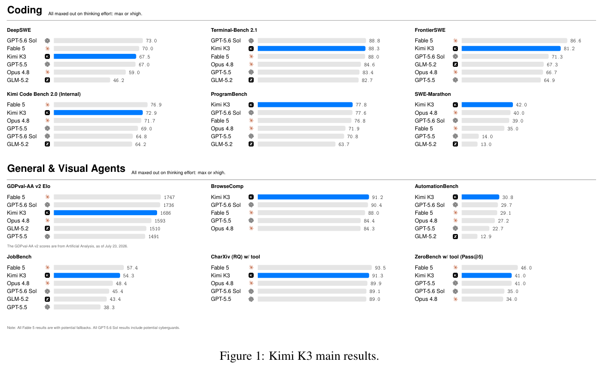
在 LLM 发展的很长一段时期内，扩展意味着在部署前投入更多计算，用更多数据训练更大的模型 [55, 46]。推理模型的兴起确立了测试时计算这一第二条扩展轴：OpenAI 的 o 系列扩展强化学习和测试时推理 [85, 84]；Anthropic 的扩展思考模型分配自适应思考预算，并交替进行推理和工具使用 [6, 7]；DeepSeek-R1 [41] 和 Kimi K1.5 [120] 表明，大规模强化学习可以从强大的预训练模型中激发复杂的推理行为；Kimi K2.5 Agent Swarm [60] 又进一步将 test-time scaling 从顺序推理拓展到并行 agent 协调。这些进展使 test-time scaling 成为前沿研究的核心关注点。然而，尽管开源模型生态在第二条轴上进展迅速，在第一条轴上的进展却较为缓慢：许多近期模型仍处于或略高于 1T 级参数规模 [147, 29, 137, 122]。随着越来越复杂的推理和 agent 强化学习方法应用于规模相近的预训练基础，开源进展可能趋于收敛，而与最强闭源系统之间的差距则不断扩大。通过 Kimi K3，我们同时沿两条扩展轴迈向前沿：将预训练基础扩展到前所未有的 3T 级参数，同时在 1M 上下文长度下扩展强化学习、推理投入和长程交互。
我们介绍 Kimi K3，这是一款原生多模态 MoE 模型，拥有 2.8 万亿总参数、1040 亿激活参数和最高 100 万 token 的上下文窗口。其架构沿序列长度、网络深度和模型宽度扩展信息流。Kimi Delta Attention（KDA）[64] 提供高效的长序列混合，周期性交错的 Gated MLA 层则保留全局交互。Attention Residuals（AttnRes）[58] 使每一层都能选择性地关注所有前置层的表示。Stable LatentMoE 将路由专家空间扩展到 896 个专家，每个 token 激活 16 个；归一化、SiTU-GLU 和分位数均衡则在极端稀疏条件下稳定优化。这些架构进展结合改进的数据和训练配方，使整体扩展效率相较 Kimi K2 [59] 提升约 2.5 倍。
我们为这一预训练基础配套了专门针对 1M 上下文 test-time scaling 设计的后训练。Kimi K3 在长程编码、通用 agent、通用推理和知识任务上进行强化学习，每一类均覆盖多个推理投入等级。训练环境包括可验证搜索和专业知识工作、软件工程与内核优化、通过视觉参与工具使用循环的多模态推理、持久助手工作流、Web 开发和自主执行任务。这些环境训练一个通用的推理、行动、观察、验证和适应循环，往往涉及数百或数千次工具调用，以及累计数百万个上下文 token。针对特定领域和投入等级的策略通过 MOPD [76, 136, 29] 整合到一个统一模型中。
实现这一训练范式需要基础设施随架构复杂性、模型大小和轨迹长度一同扩展。在 KDA 系统协同设计方面，我们开发融合内核、KDA CP 和状态感知前缀缓存，使 KDA 在设备内部、跨设备和跨请求的执行中都保持高效。对于 2.8T 参数 MoE 预训练，MoonEP 通过静态计算形状和零拷贝通信，实现完全均衡的专家执行；内存高效训练和多模态编码器优化则在有限内存内保持利用率。对于百万 token agent 强化学习，我们的共置系统结合部分 rollout、外部 KV-cache 保留、自适应限流和可恢复的 microVM 沙箱，以保留长期存续的模型与环境状态。最后，专用内核以及感知缓存和预算的集群调度，将这些创新转化为可预测的生产服务。
由此产生的模型确立了新的开放前沿。如图 1 所示，在覆盖长程编码、agent、知识、推理和视觉任务的基准上，Kimi K3 整体表现落后于最强的闭源系统 Claude Fable 5 和 GPT-5.6 Sol，但始终领先于我们评估套件中的其他开放和闭源模型。
我们的贡献概括如下：
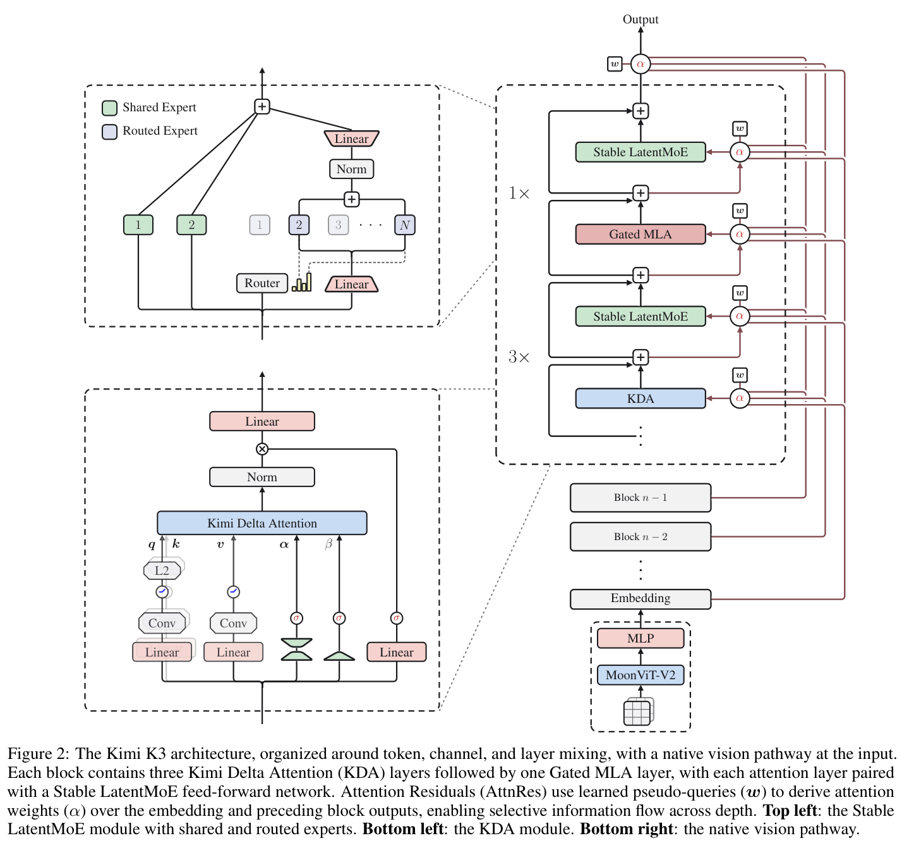
Kimi K3 架构旨在沿三个互补维度扩展信息流：序列长度、网络深度和模型宽度。沿序列维度，混合 attention 在每个块中将三个 Kimi Delta Attention（KDA）[64] 层与一个 Gated MLA 层结合，在保留选择性的高容量 attention 的同时，为长上下文 token 混合提供高效机制（§2.1）。沿深度维度，Attention Residuals（AttnRes）[58] 使每个模块能够从 embedding、当前块和前置块中选择性地检索表示，将信息访问范围扩展到传统顺序残差累加之外（§2.2）。沿宽度维度，每个 attention 层后接一个 Stable LatentMoE 层，执行稀疏通道混合，为每个 token 实际激活 896 个路由专家中的 16 个（§2.3）。在原生视觉方面，MoonViT-V2 对图像和视频进行编码，轻量投影器在骨干网络处理之前，将所得视觉特征映射到共享 embedding 空间（§2.4）。这些组件与逐头 Muon（§2.5）共同构成统一架构，用于跨 token、层和通道扩展信息流。结合改进的训练和数据配方，它们使整体扩展效率相较 Kimi K2 提升约 2.5 倍。图 2 给出了架构概览。
Kimi K3 在层级上混合线性 attention 和全局 attention，将 KDA [64] 与 Gated MLA 结合。每个块包含 3 个 KDA 层，后接 1 个 Gated MLA 层，混合比例为 3:1。这一模式在整个骨干网络中重复。下文分别介绍两种 attention 机制。在骨干网络末端另设一个 Gated MLA 层，确保最后一层始终执行全局 attention。
KDA 在 delta-rule 递归 [106, 140] 中引入逐通道遗忘门 [64]。考虑隐藏状态序列 \(x_{t} \in \mathbb{R} ^{d}\)，其中 \(t\) 表示 token 位置，\(d\) 为模型隐藏维度。为清楚起见，我们先描述单个 attention 头，其查询向量和键向量为 \(q_{t}\)、\(k_{t} \in \mathbb{R} ^{d_{k}}\)，值向量为 \(v_{t} \in \mathbb{R} ^{d_{v}}\)，递归状态为 \(S_{t} \in \mathbb{R} ^{d_{k}\times d_{v}}\)。KDA 在 delta-rule 更新之前应用逐通道衰减：
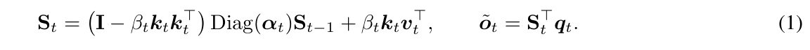
这里，\(\alpha _{t} \in (0, 1)^{d_{k}}\) 是逐通道单步保留因子，\(\beta _{t} \in (0, 1)\) 控制 delta-rule 的写入强度。沿用 Kimi Linear [64]，KDA 将逐头量参数化为：
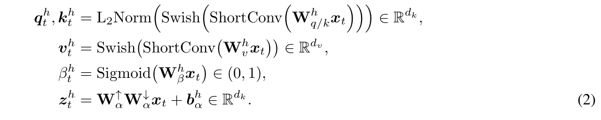
查询、键和值投影先应用 ShortConv，再应用 Swish [140]；查询和键进一步通过 \(\mathrm{L}_{2}\mathrm{Norm}\) [143] 归一化。低秩投影和头专属偏置 \(b^{h}_{\alpha} \in \mathbb{R} ^{d_{k}}\) 为每个键通道生成细粒度衰减 logit \(z^{h}_{t}\)。从 \(z^{h}_{t}\) 到 \(\alpha ^{h}_{t}\) 的具有下界的映射，会在下述分块形式之后介绍。
分块并行形式。沿用 Kimi Linear [64]，KDA 在块间递归、在每个块内部并行。对于块大小 \(C\)，\(X_{[t]}\) 将第 \(t\) 个块中的 token 向量堆叠起来，其中 \(X \in \{Q, K, V, O, U, W\}\)。矩阵 \(S_{[t]} \in \mathbb{R} ^{d_{k}\times d_{v}}\) 表示进入块 \(t\) 的递归状态。对于位置 \(1 \le i \le j \le C\)，定义逐通道累积衰减：
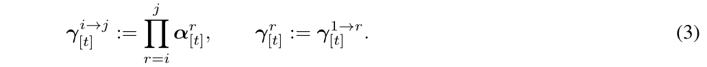
与 Kimi Linear 相同，\(\Gamma ^{1\to C}_{[t]} \in \mathbb{R} ^{C\times d_{k}}\) 按行堆叠 \(\gamma ^{1}_{[t]}\)、…、\(\gamma ^{C}_{[t]}\)。UT 变换产生 \(U_{[t]}\) 和 \(W_{[t]}\)，据此定义伪值项 \(\tilde{V}_{[t]} := U_{[t]} - W_{[t]}S_{[t]}\)。给定传入状态 \(S_{[t]}\)，块 \(t\) 内的所有输出并行计算如下：
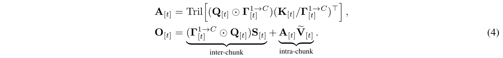
对于矩阵 \(M\)，Tril(M) 将严格上三角元素全部置零，并保留下三角元素，包括对角线。这一掩码强制块内交互遵循因果关系；保留对角线是因为每个输出读取的是当前 token 更新后的状态。\(O_{[t]}\) 中第一项携带前置块的信息，第二项则表示当前块内部的交互。UT 变换和分块形式的完整推导可参见 Kimi Linear [64]。
具有下界的衰减。式 4 使用累积衰减的倒数 \(1/\Gamma ^{1\to C}_{[t]}\) 对每个块中的键重新缩放。由于 \(\Gamma ^{1\to C}_{[t]}\) 是取值在 (0, 1) 中的保留因子的乘积，其倒数可能无界增长，在有限精度下溢出 [142, 64]。Kimi Linear 通过在对数空间计算相对衰减，并将每个块进一步划分为 16-token 小块，控制这一数值范围 [142, 64]。非对角小块随后可直接使用 Tensor Core 上的稠密矩阵乘法计算。相比之下，对角小块仍需要显式的位置对计算，这依然是块内的主要瓶颈。
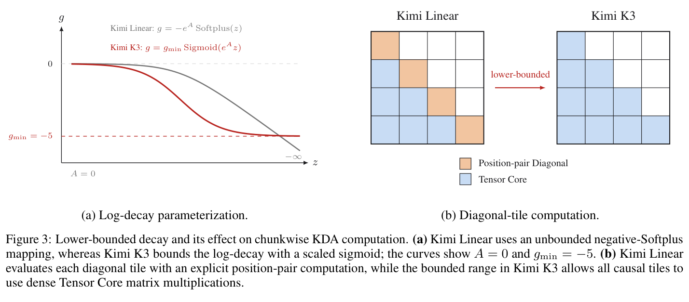
Kimi K3 通过改变衰减 logit \(z^{h}_{t}\) 到单步对数衰减 \(g^{h}_{t}\) 的映射，解决这一瓶颈。沿用 GDN 和 Mamba-2，Kimi Linear 使用负 Softplus 映射 \(g^{h}_{t} = -e^{A_{h}}Softplus(z^{h}_{t}) \in (-\infty , 0)^{d_{k}} [140, 24, 64]\)。Kimi K3 改用缩放后的 sigmoid，为对数衰减设置下界：
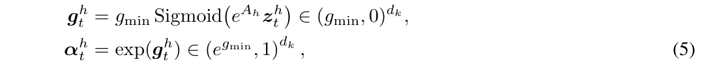
其中 \(A_{h}\) 是可学习的逐头对数尺度，\(g_{min}\) 固定为 −5。我们将 \(A_{h}\) 初始化为 0，并按照 [64, 24, 140] 初始化每个偏置 \(b^{h}_{\alpha}\)。当 \(g_{min} = -5\) 时，每个保留因子都满足 \(\alpha ^{h}_{t,j} > e^{-5} \approx 6.7 \times 10^{-3}\)，16-token 小块上的累积对数衰减位于 (−80, 0) 内。因此，对应的倒数重缩放因子小于 \(e^{80}\)，仍在 BF16 动态范围内。这一有限范围使对角和非对角小块都能使用稠密 Tensor Core 矩阵乘法，消除了基于位置对的对角计算路径。这种参数化与以往工作中具有下界的递归门密切相关 [98, 27, 92]。图 3 展示了衰减参数化的变化及其计算后果。
全秩门。最后，Kimi K3 将 KDA 的输出门从 Kimi Linear [64] 使用的低秩参数化改为依赖输入的全秩投影。在对递归输出应用逐头 RMSNorm [148] 后，KDA 应用依赖数据的输出门控 [100]：
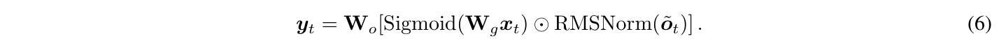
DeepSeek-V2 [28] 提出的 MLA，将每个 token 的键值表示压缩为低维潜在向量 \(c_{t} = W_{c}x_{t}\)。MLA 缓存 \(c_{t}\)，并在 attention 计算期间通过学习得到的升维投影重建内容键和值，而非缓存各头完整的键和值。这种分解降低了 KV-cache 的占用，同时保留全局 token 间 attention。Kimi K2 和 Kimi K2.5 [59, 60] 随后采用了 MLA，Kimi K3 则在周期性的全局 attention 层中保留它。
与 Kimi K2 和 Kimi K2.5 不同，Kimi K3 遵循 Kimi Linear [64] 的混合设计，对所有 MLA 层采用 NoPE。因此，它们的查询或键均不应用显式位置编码。交错的 KDA 层提供位置敏感且感知近因的序列混合，而 MLA 层提供不受限制的全局内容交互。这种分工也避免了扩展上下文长度时修改位置编码参数，例如重新调整 RoPE 频率基数或应用 YaRN [93]。
此外，Kimi K3 为 MLA 增加了依赖输入的逐通道全秩输出门。令 \(\tilde{o}_{t}\) 表示位置 \(t\) 上未经门控的 MLA 输出，门控后的输出为：
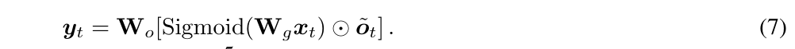
门投影 \(W_{g}\) 为全秩，与 Kimi K3 中 KDA 所用的新参数化一致。该门使每个 token 能够调节从全局 attention 读取的通道 [100]。
为纠正 [99] 在 flash attention 中指出的有偏舍入误差，我们在训练期间将 attention 输出保持为 FP32。这使输出小块的片上占用翻倍；因此，我们重新设计训练内核，使其与 KV 暂存缓冲区复用空间，而不是与查询小块复用，从而释放共享内存，以支持更深的 KV 流水线和更高的训练吞吐量。
标准残差连接 [44] 沿深度将所有先前信息压缩到单一状态 \(h_{l}\) 中，这一瓶颈类似于 RNN 在时间维度上的瓶颈。在序列建模中，Transformer 用 attention 取代了递归 [10, 127]，使每个位置能够以依赖数据的权重，选择性地访问所有先前位置。Attention Residuals（AttnRes）[58] 将同样的方法应用于深度：每一层选择性地检索所有前置层的表示，而非均匀地累加它们。
完整 Attention Residuals。对于每一层 \(l\)，我们定义该层专属的可学习伪查询 \(q_{l} = w_{l} \in \mathbb{R} ^{d}\)，以及键和值：
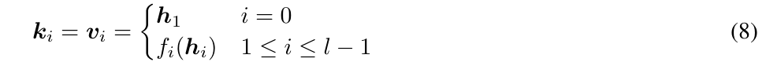
其中 \(f_{i}(h_{i})\) 是第 \(i\) 层的输出，\(h_{1}\) 是 token embedding。Attention 权重遵循 softmax 核 \(\phi (q, k) = exp(q^{\top}RMSNorm(k)) [56, 148]\)，其中 RMSNorm 防止输出幅值较大的层支配权重：
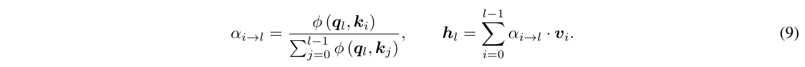
由于网络深度适中（\(L < 100\)），这一完整形式的 O(L²d) 算术开销可以承受；实际开销来自为保留所有层输出而需要的 O(Ld) 内存，以及 PP 下的跨阶段通信。
分块 Attention Residuals。为降低这一开销，我们将 \(L\) 层划分为 \(N\) 个块，每块包含 \(S = L/N\) 层。在块 \(n\) 内（层索引集合为 \(\mathcal{B} _{n}\)），各层输出求和归约为一个表示 \(b_{n} = \sum _{j\in \mathcal{B} _{n}} f_{j}(h_{j})\)，\(b^{i}_{n}\) 表示块内前 \(i\) 层的部分和；我们设 \(b_{0} = h_{1}\)，使 token embedding 始终作为一个来源包含在内。跨块时，仅在 \(N\) 个块级表示上应用完整 attention：对于块 \(n\) 中的第 \(i\) 层，值矩阵为：
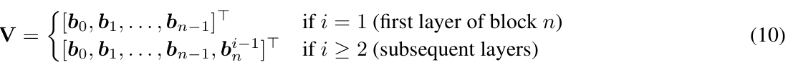
键和 attention 权重遵循式 8 和式 9。最终输出层随后聚合全部 \(N\) 个块表示。在分块 AttnRes 下，内存和通信开销从 O(Ld) 降到 O(Nd)；这一块结构还限制了推理时状态，使并行的块间结果能通过在线 softmax [80] 更好地与顺序的块内部分和合并，显著降低推理时间开销。
实验证明，在不同模型规模下，\(N \approx 8\) 能恢复大部分收益 [58]；对于 Kimi K3，我们将其层划分为 8 个块，块大小为 12 层，最后一个块不满；计入 embedding 层后，总共有 9 个块。
同时增加专家池和激活专家数量，可以扩展专家的专门化空间。但在传统 MoE 中，每个选中专家都接收完整的 \(d\) 维 token 表示，因此通信和专家权重流量随路由多重性增长。LatentMoE [32] 将完整模型宽度与路由专家宽度分离，使这种扩展变得可负担：共享专家保留全宽度路径，用于共同变换；专门化的路由专家则在宽度为 \(\ell\) 的紧凑潜在空间中运行。这使 Kimi K3 能将通道混合扩展到 896 个路由专家，每个 token 激活 16 个专家，对应稀疏度为 56。
这种极端稀疏性放大了原始设计的两种失效模式。首先，路由路径将 W↓、一个门控多分支专家 FFN 和 W↑ 组合成近乎连续四次矩阵乘法的链。这一病态结构结合 2.8 万亿参数的规模，使路由分支的内部激活爆炸。其次，为近 10³ 个专家均衡负载，超出了现有无辅助损失偏置更新能够保持良好行为的适用范围。
（本段后续说明接第 7 页。）
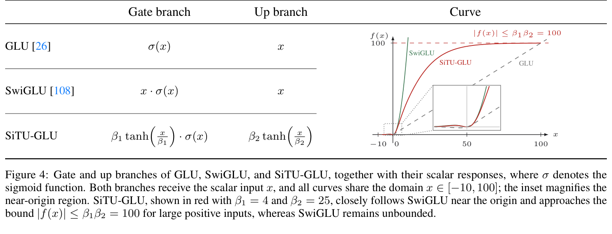
（接上页。）Stable LatentMoE 使用三个组件解决这两种失效模式：在升维投影前加入 RMSNorm，并使用 Sigmoid Tanh Unit GLU（SiTU-GLU）抑制激活爆炸；使用分位数均衡（QB）实现负载均衡。
如图 2 所示，该层沿用 DeepSeekMoE [23] 的共享专家与路由专家组织方式。对于 \(x \in \mathbb{R} ^{d}\)，共享专家直接处理 \(x\)，路由路径则将其投影到 \(z = W\)↓\(x \in \mathbb{R} ^{\ell}\)，将 \(z\) 分发给选中专家，再通过 \(W\)↑ 将其加权聚合映射回 \(\mathbb{R} ^{d}\)：
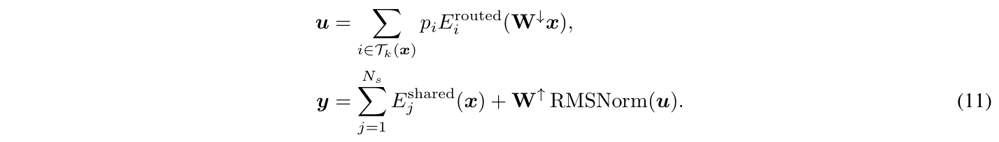
这里，\(u \in \mathbb{R} ^{\ell}\) 是聚合后的路由表示，\(E^{shared}_{j}: \mathbb{R} ^{d} \to \mathbb{R} ^{d}\) 和 \(E^{routed}_{i}: \mathbb{R} ^{\ell} \to \mathbb{R} ^{\ell}\) 分别是共享和路由专家 FFN，\(p_{i}\) 是由下述分位数均衡规则定义的路由权重。Kimi K3 在每一层中将全宽度共享专家数量固定为 \(N_{s} = 2\)。
原始 LatentMoE 直接将 W↑ 应用于聚合后的路由表示 \(u\)，其尺度可能随选中专家及其路由权重而变化。如式 11 所示，Kimi K3 在专家聚合与升维投影之间插入 RMSNorm [148]。在路由分支与全宽度共享分支合并之前，这一归一化降低了它对尺度变化的敏感性。除了稳定训练，额外的 RMSNorm 还持续改善验证损失和下游基准表现。
GLU 使用经过 sigmoid 激活的门调节线性值分支，计算 \(Sigmoid(W_{g}x) \odot W_{u}x [26]\)。SwiGLU 用 \(Swish(x) = x Sigmoid(x)\) 取代 sigmoid 门，在 Transformer 中表现出很强的实验性能 [108]。SwiGLU 随后成为 LLM 广泛采用的 FFN 设计，但对其经验有效性的完整解释仍是开放问题。
然而，SwiGLU 中两个相乘因子都无界，因此同时出现的大坐标值可能产生激活 outlier，并增加低精度算术中的溢出风险。原始 GLU 的 sigmoid 门避免了门值无界增长，但未保留 Swish 在正值区间近似线性的特征。这促使我们设计一种激活函数，既控制大值增长，又保留 SwiGLU 的典型局部及正值侧响应。其他近期研究也探索了这一权衡的替代参数化方式 [52]。
为满足这些要求，我们提出 Sigmoid Tanh Unit GLU（SiTU-GLU）。SiTU-GLU 将平滑上限函数 \(softcap(x, \beta ) = \beta tanh(x/\beta )\) 应用于 Swish 门的线性因子，并独立应用于升维分支：
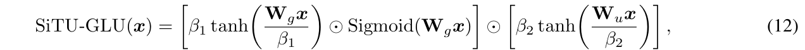
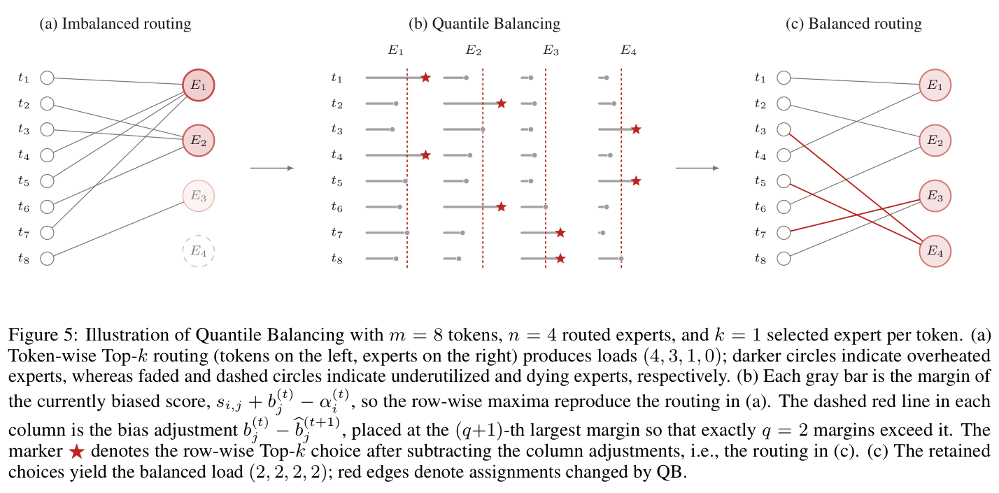
对于 Kimi K3，我们将平滑上限超参数设置为：门分支 \(\beta _{1} = 4\)，升维分支 \(\beta _{2} = 25\)。缩放后的 tanh 在原点附近近似线性，在幅值较大时有界，使 SiTU-GLU 在控制乘积中两个因子的同时保留 SwiGLU 的局部响应。图 4 在同一切片上比较了 GLU、SwiGLU 和 SiTU-GLU 的分支定义与标量响应。
附录 B 给出了局部展开、极限情形、形式化输出界，以及与硬截断的比较。
不同于基于辅助损失的路由 [33]，Kimi K3 采用无辅助损失路由 [30]。负载均衡通过在用于 Top-k 选择的路由分数上添加专家专属偏置 \(b_{j}\) 实现。对于 token \(x_{i}\)，路由器计算 \(s_{i} = Sigmoid(W_{r}x_{i})\)，并应用：
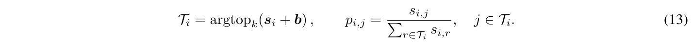
由于 \(p_{i,j}\) 中不含 \(b\)，它可以调节分发而不改变混合权重，也不改变路由器基于 gradient 的优化。原始方法采用固定步长规则 \(b^{(t+1)}_{j} = b^{(t)}_{j} + \gamma sign(\bar{\ell} - \ell ^{(t)}_{j})\) 更新 b [30]，其中 \(\gamma\) 在缓慢适应与负载振荡之间进行权衡。当 LatentMoE 将每层路由专家池增至 896 个时，保持负载均衡变得更具挑战。路由不均衡会降低 EP 训练速度，并可能使部分专家训练不足 [48]。
为解决这一局限，我们提出分位数均衡（QB），根据与目标负载对应的路由分数分位数 [113, 114] 设置每个专家的偏置。考虑包含 \(m\) 个 token 的训练 batch，将其以 Top-k 选择路由至 \(n\) 个专家，因此每个专家的目标负载为 \(q := mk/n\) 个 token。QB 从单次前向传播推导下一次偏置。路由将偏置分数 \(s_{i} + b^{(t)}\) 上的 Top-k 选择替换为 Top-\((k+1)\)：前 \(k\) 项是实际采用的路由，第 \((k+1)\) 项则是截断值 \(\alpha ^{(t)}_{i}\)，专家必须超过该值才能进入 token \(i\) 的 Top-k。从 Top-\((k+1)\) 路由中取得截断值，避免了单独计算 token 侧分位数。随后，我们选择每个专家的偏置，使专家 \(j\) 达到其目标负载：固定截断值后，在候选偏置 \(\hat{b}^{(t+1)}_{j}\) 下，路由到专家 \(j\) 的 token 数量为：
它随阈值 \(-\hat{b}^{(t+1)}_{j}\) 单调递减。假设没有并列值，将这一数量设为 \(q\)，就使 \(-\hat{b}^{(t+1)}_{j}\) 等于间隔值 \(s_{i,j} - \alpha ^{(t)}_{i}\) 中第 \((q+1)\) 大的值，从而恰有 \(q\) 个间隔值位于阈值之上。由于 \(q/m = k/n\)，这就是跨 token 间隔值的 \((1-k/n)\) 分位数。
（QB 更新公式接第 9 页。）
（接上页。）由此得到 QB 更新：
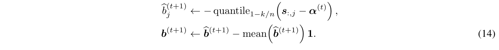
间隔值从原始分数 \(s_{i,j}\) 中减去带偏置的截断值 \(\alpha ^{(t)}_{i}\)，因此旧偏置仅通过截断值进入更新；第二行去除一个不改变 Top-k 选择的共同偏移。为保证因果性，更新仅在下一步生效 [30]，也就是说，一个 batch 绝不会用从自身导出的偏置进行路由。图 5 展示了 \(m = 8\)、\(n = 4\)、\(k = 1\) 的情形，每个专家均得到目标负载 \(q = 2\)。推理时冻结最终偏置。均衡分配的推导见附录 C。
直方图估计。在大规模训练中，式 14 的分位数覆盖完整全局 batch，数百万个间隔值分散在各 rank 和 gradient 累积步骤上，因此在训练时汇集它们来求精确分位数不可行。我们改为从每个专家的间隔值直方图中读取其分位数：一次 all-reduce 对各 rank 的分箱计数求和，随后从汇总计数中恢复分位数。由于计数可相加，无论 token 如何分片，直方图都代表汇集后的全局 batch；因此，估计反映的是整个 batch 的分位数，误差至多为分箱宽度，而通信成本仅为每个专家数百个分箱。实际使用的正是这一估计器；附录 D 给出了更详细的描述及其误差界。
Kimi K3 原生支持多模态：文本、图像和视频由单一共享骨干网络在同一个上下文中处理，无需事后的模态对齐阶段。这一设计是 §1 所述长程、视觉参与循环行为的架构基础。渲染输出及生成它们的代码处于同一 token 流中，模型能够编写代码、查看结果的截图或视频帧，并迭代改进用户界面、图形、视频等视觉产物，无需跨模型交接。
MoonViT-V2。与 Kimi K2.5 的一个关键区别是，我们完全从零开始，通过下一 token 预测训练 Kimi K3 的视觉编码器 MoonViT-V2。以往做法，包括 Kimi K2.5 本身，使用 SigLIP 等经过对比预训练的模型初始化视觉编码器，其前提是预训练视觉知识能让模型获得起步优势。我们主要出于训练稳定性的考虑而改变这一做法。当预训练编码器接入 LLM 时，联合优化变得不稳定：通过 SigLIP 初始化的 MoonViT-3D 持续表现出更高的 gradient 范数和频繁尖峰，而 MoonViT-V2 在整个训练中保持稳定（图 6）。使用下一 token 预测训练，还使编码器表示能够直接由语言建模目标塑造，而非由偏向全局语义、弱化细粒度文本和结构线索的对比损失塑造。值得关注的是，我们发现 MoonViT-V2 在视觉评估中与 SigLIP 初始化的基线相当，这表明大规模多模态语言模型不必依赖对比预训练来初始化。
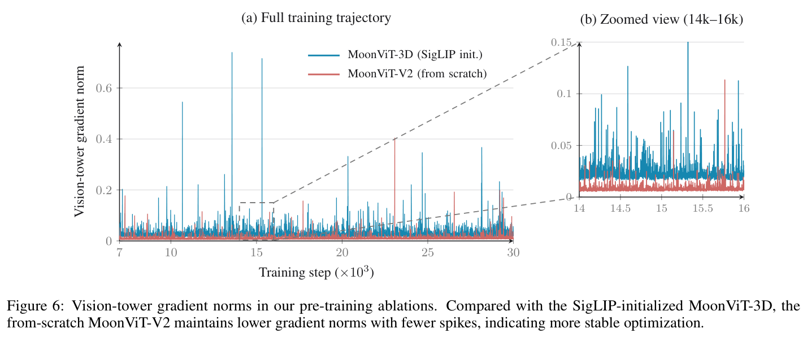
架构。这一训练配方建立在沿用 Kimi K2.5 [60, 62] 总体设计的视觉路径之上：视觉输入先由 MoonViT-V2 编码，再通过轻量 MLP 投影器映射到 LLM。MoonViT-V2 是一个约 0.4B 参数的 27 层视觉 Transformer，采用 RMSNorm，并移除线性投影和 attention 投影中的所有偏置项，以进一步稳定上述从零开始的优化。与 MoonViT-3D 相同，图像和视频使用完全共享的参数处理：attention 分解为帧内空间和帧间时间两个过程，时间池化进一步沿时间维度压缩 token。在投影之前，采用 \(2 \times 2\) 下采样的 pixel-shuffle 操作将视觉 token 数量减少到四分之一，使最高 \(3584 \times 3584\) 像素的输入在 1M-token 上下文内仍可负担。
沿用 Kimi K2，Kimi K3 为矩阵参数采用 Muon [54] 优化器。对于 attention 投影，我们进一步将其改进为逐头变体 [112, 147]：不对完整的 \(Q\)、\(K\) 和 \(V\) 投影矩阵应用 Newton–Schulz 正交化，而是沿头维度划分动量矩阵，分别对每个头的块进行正交化。直觉是，完整矩阵正交化将所有头视为一个耦合块，因此 gradient 或动量尺度较大的头支配共同的更新方向，尺度较小的头得到的更新则归一化不足；逐头正交化均衡了各头的更新尺度。实践中，这一设计带来了更均衡的逐头学习动态，改善了较大规模下的训练稳定性。它也略微降低了优化器开销，因为在高瘦的逐头矩阵块上进行 Newton–Schulz 迭代，比在完整投影矩阵上进行迭代更便宜。
Kimi K3 使用经过筛选的语料进行预训练，涵盖四个主要文本领域：Web 文本、代码、数学和知识，另配有大规模视觉语料。视觉数据覆盖图像描述、交错图文文档、OCR、感知、视频和视觉编码数据。我们的数据流水线建立在 Kimi K2 [59] 开发并在 Kimi K2.5 [60] 中改进的流水线之上。
文本数据。各领域均结合基于规则的启发式方法、基于分类器的质量评分和去重进行过滤；各领域采样率通过较小模型上的消融实验确定。遵循 Kimi K2 [59] 的改写配方，我们使用风格和视角多样的提示、分块自回归生成，以及对照源文档的保真度验证，对知识和数学语料进行改写。
视觉数据。视觉语料沿用 Kimi K2.5 [60] 的分类体系，将开源数据集合与内部的过滤、合成和去重流水线结合。训练时同时提供绝对坐标和归一化（[0, 1]）坐标监督，支持精确且对分辨率变化稳健的定位。除传统的带文本描述图像外，我们还大幅扩展程序化多模态数据，将代码片段与其渲染视觉结果配对，覆盖 SVG、3D 资产、Webpage、Game 和 CAD 示意图等特定领域格式。
前述架构、数据和训练改进共同定义了我们的新模型家族。由于这些变化也改变了最优训练范式，我们开展专门的 scaling laws 研究，重新调节关键超参数，包括 batch 大小、学习率、每参数 token 比率（TPP）和模型形状。在留出的分布外（OOD）验证数据上评估时，图 7 的 scaling laws 曲线显示，这些改进共同使整体扩展效率相较 Kimi K2 提升约 2.5 倍。表 1 对 Kimi K2 和 Kimi K3 的架构进行了详细比较，突出展示了带来这一提升的结构变化。
我们的 scaling laws 研究始终更支持余弦衰减，而非 WSD[47]，因此我们采用余弦衰减作为默认学习率调度。我们在固定最低学习率的条件下比较余弦衰减与 WSD。尽管以往工作报告 WSD 可以达到甚至超过余弦衰减的表现，我们观察到，两种调度的最优超参数明显不同。即使模型大小和训练 token 预算相同，它们的最优峰值学习率和 batch 大小仍有显著差异。因此，使用共同超参数比较两种调度，可能仅因为这些参数更匹配其中一种而不公平地偏向它。为公平比较，我们分别为每种调度开展独立的 scaling laws 搜索。在各自的最优超参数设置下，余弦衰减始终获得比 WSD 更低的最终损失。
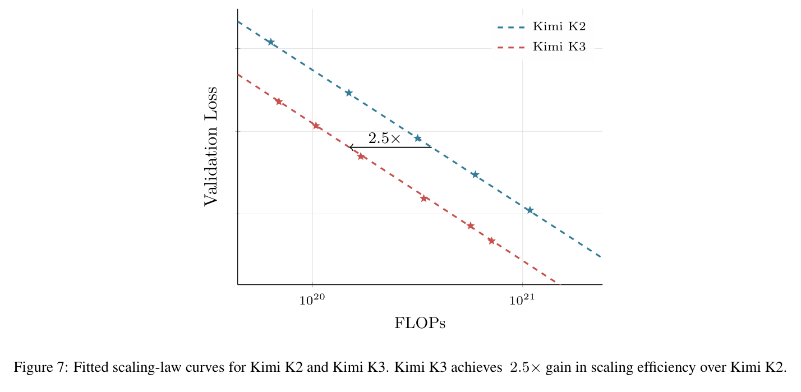
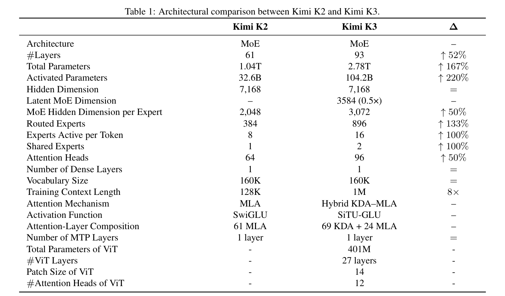
Kimi K3 采用原生多模态训练策略，从训练开始便联合优化语言和视觉，而不是通过事后对齐阶段，将视觉编码器嫁接到预训练语言模型上。在这一范式下，视觉与文本 token 在单一的下一 token 预测目标中交错，使共享骨干网络从一开始就学习统一的多模态表示。
我们使用逐头 Muon 优化器（§2.5）和 Kimi K2 引入的权重裁剪机制优化模型，并采用 QB（§2.3.3）进行 MoE 负载均衡。我们使用包含 1% 线性 warmup 的余弦学习率调度。权重衰减始终设为 0.1。
我们的预训练从 8k-token 上下文长度开始，随后在后续训练阶段扩展到 64k token。
位置编码。Kimi K3 不使用显式位置 embedding（NoPE），而是通过 KDA 的递归门控和衰减机制隐式编码位置信息。因此，模型可以直接外推到 1M-token 上下文，无需对位置编码作任何修改，例如 RoPE 重缩放或插值 [93]。
长上下文数据。自然来源的长文档和视频包含大量低质量内容，包括近似重复项、二进制数据块、截断文件、视频片段和无效的机器生成日志。因此，我们使用专用清洗流水线处理它们，将精确去重与模糊去重结合，视频还辅以逐帧感知哈希，并结合启发式与分类器质量过滤及结构验证。相对于短文本，真正长且连贯的文档和视频较为稀缺，因此我们对它们上采样，防止冷却阶段的长上下文分布被短序列淹没。然而，仅有长度并不能带来长程能力。为此，我们通过仔细置换和拼接多模态文档及子任务，合成额外的长上下文数据，使 embedding 其中的任务只能通过关注分散在完整 1M-token 上下文中的信息来解决。这在目标规模上训练 attention 机制，并防止它退化为局部模式。
渐进式上下文扩展。Kimi K3 支持最高 100 万 token 的上下文窗口。我们遵循四阶段课程，随着训练推进逐步扩展窗口：预训练期间从 8K 增至 64K token，冷却阶段从 256K 增至 1M token。将昂贵的长序列计算集中在整体训练预算中的一小部分，既使课程保持经济性，又允许模型逐渐适应越来越长程的依赖。使 KDA 层能够进行百万 token 训练的序列维度划分，详见 §5.1.2。
我们的后训练流水线遵循三个阶段：通过 SFT 初始化基础 agent 能力，通过强化学习（RL）培养具有不同推理投入的专门领域专家，再使用 MOPD 将这些领域专属策略整合到一个模型中。
SFT 阶段为后续 RL 阶段建立高质量的冷启动策略。在先前 Kimi 模型 [59, 60] 的 SFT 流水线基础上，我们扩展了 Kimi K3 的 SFT 数据集，大幅扩大对复杂 agent 任务的覆盖。具体而言，我们使用先前 Kimi 系列中的领域专门模型合成数据轨迹，随后进行多阶段验证和人工参与标注。为一致地表示这些复杂 agent 轨迹，我们使用基于 XTML 的聊天模板序列化所有数据（eXtensible Token Markup Language，可扩展 token 标记语言；详见附录 F）。这些步骤共同产生一个大规模指令数据集，赋予 Kimi K3 自适应推理、精确工具调用和在长程 agent 场景中稳健执行的能力。此外，我们从 SFT 阶段起应用 QAT，采用 MXFP4 权重和 MXFP8 激活（§4.1.4）。
SFT 提供了扎实的冷启动基础，而 RL 对于解锁更高阶的推理与执行能力至关重要。我们不为单独任务训练专门的 RL 模型，而是在三个广泛领域扩展 RL，每个领域包含多种子任务，并在每个推理投入等级上为每个领域训练一个专家：（i）通用任务，涵盖通用体验、视觉、推理、忠实性、搜索能力和知识工作任务；（ii）通用 agent，涵盖长程助手任务、深度研究和段落级写作；（iii）编码 agent，涵盖软件工程（SWE）、编码体验、内核任务和 Web 开发。如图 8 所示，扩展 RL FLOPs 持续改善知识、推理、视觉、通用 agent 和编码等多种能力。将这三个领域专家与 {low, high, max} 中的三个推理投入等级交叉组合，总共得到九个专家模型。
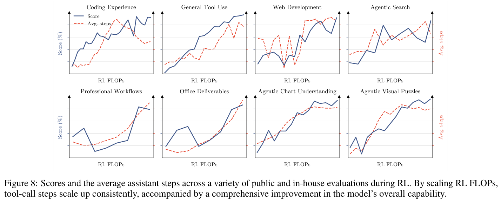
算法。为缓解长程任务中加剧的长尾延迟，我们扩展了同步 RL 框架 [120, 60] 中的部分 rollout 方案。每次迭代的 rollout 阶段，为 \(N\) 个提示中的每个提示采样 \(K\) 个补全，维持 \(N \times K\) 条轨迹的活跃工作负载。生成阶段不等待全部 rollout 结束，而是在比例为 \(\lambda \in (0, 1)\) 的轨迹完成时（即 \(\lambda NK\) 条）立即暂停，使策略优化无需等待执行落后者。借助沙箱基础设施（§5.3.2），暂停的 rollout 被加入队列，并在下一次迭代开始时优先恢复。一旦一个提示的全部 \(K\) 个响应完成，便立即送入策略优化，其采用 Kimi K2.5 [60] 的算法。
在部分 rollout 方案下，单条长程轨迹自然会跨越多次迭代，引入威胁训练稳定性的数据陈旧性。我们的策略优化算法通过逐 token 正则化，本身就能容忍这种极端的 off-policy 情形。通过将策略更新约束在局部邻域内，这一正则化使算法能够稳健处理高度陈旧的数据，并维持训练稳定性。
推理投入强化学习。为精细调整推理投入并最大化 token 效率，我们在 RL 期间实现逐问题预算控制机制 [60]。对每个问题 \(x\)，关联一个由冷启动模型估计的初始 token 预算 \(b_{0}(x)\)；如果轨迹的总 token 预算 \(T(y)\) 超过缩放阈值 \(\tau \cdot b_{0}(x)\)，则将其任务奖励覆盖为 −1。对于通用任务，\(T(y)\) 衡量思考 token 数量；对于 agent 任务，\(T(y)\) 统计累计输出 token，包括推理轨迹和工具调用参数。训练遵循围绕预算乘数 \(\tau\) 的分阶段课程。首先使用较大的 \(\tau\) 训练 max 预算变体，同时仍为最高预算设限以抑制过度思考。随后将 \(\tau\) 退火到较小值，获得 high 和 low 投入的专家模型。\(\tau\) 的调整在人工参与指导下按领域配置。所得专家在所有推理等级生成的轨迹被共同收集，用于 SFT 和 MOPD。
agentGenRM。对于不可验证的通用任务，我们采用agentGenRM（GRM），保留 Kimi K2.5 [59, 60] 中基于二元比较的锦标赛式组奖励。除用于增强判断的通用 agent 能力外，agent 裁判还必须遵循强制协议：（1）读取结果、产物或文本输出；（2）生成评分标准；（3）根据标准对每个候选评分；（4）将标准分配的分数记录到 scorepad 中。为缓解通过输出越来越冗长内容来进行奖励作弊，我们采用与上述推理投入控制类似的预算型冗长度控制：给定由冷启动模型估计的初始冗长度 \(\ell _{0}\) 和乘数 \(\sigma\)，输出长度超过 \(\sigma \cdot \ell _{0}\) 的候选自动输掉二元比较。
我们采用 MOPD，将这些不同推理投入下的领域专门能力整合到统一模型中 [76, 136, 29]。训练时，给定领域 \(d\) 和采样的推理投入等级 \(e \in \{low, high, max\}\)，由九个专家中对应的教师模型 \(\pi ^{(d,e)}_{teacher}\) 指导优化。给定输入查询 \(x\) 和响应前缀 \(y_{<t}\)，教师与学生 \(\pi _{\theta}\) 在 \(y_{t}\) 上计算的逐 token OPD 奖励定义如下（接第 14 页）：
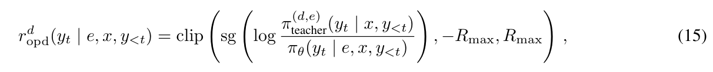
其中 sg(·) 表示停止 gradient 算子，\(R_{max} > 0\) 是用于限制极端优势信号的裁剪阈值，从而稳定 RL 训练。这种密集奖励信号无缝整合到我们的 RL 框架中，自然支持基础设施层面的优化，例如长程任务的部分 rollout 训练。我们也尝试了更细粒度的 top-k 蒸馏目标，但在本设置下，未观察到收敛速度或最终性能的明确优势。
MXFP4 量化感知后训练。为降低部署时的内存占用和服务成本，我们将占据模型参数内存主体的 MoE 专家权重量化为 MXFP4 [104]，激活以 MXFP8 计算；所有非专家组件（attention 投影、潜在 MoE 投影、共享专家和 MoE 路由器）则保持较高精度。整个后训练阶段，包括 SFT 和 RL，均进行 QAT[50]，使模型适应量化引起的精度损失。RL 期间，rollout 与训练使用相同的量化方案，消除训练与推理不匹配。
草稿模型微调。优化推理效率对于提供复杂、长程 agent 模型服务至关重要。Kimi K3 预训练时包含一个 MTP 层，其结构与骨干网络块一致。EAGLE-3 [72] 的草稿模型由单个解码器层组成，结构与 MTP 层相匹配，因此我们将预训练 MTP 层微调为 EAGLE-3 风格草稿模型，冻结目标模型，仅更新草稿层及其特征融合投影。遵循 EAGLE-3 的训练时测试协议，训练期间将草稿展开七步；第一步之后，由于最新位置的目标侧特征不可用，草稿使用自己在先前步骤中的输出，与推理时的递归草拟过程一致。
草稿输入融合目标模型的低、中、高层特征，分别来自第 1 个、第 4 个和最后一个 AttnRes 块的输出（§2.2）。这些特征被拼接，并由无偏置矩阵 \(W_{E3}\) 投影到隐藏维度；该矩阵初始化为 [0 0 I]，使融合表示初始化时与高层特征 \(h_{h}\) 一致，也就是 MTP 层预训练时所用的输入，随后在微调中逐渐学会融合低层和中层特征。
在无损推测采样下，speculative decoding 的加速取决于逐 token 接受率 \(\sum _{x\in \mathcal{V}} min(p(x), q(x))\)，其中 \(p\) 和 \(q\) 分别表示目标模型与草稿模型的下一 token 分布。对于容量受限的草稿模型，最小化传统 KL 散度替代目标并不保证最大化该接受率，因此我们直接优化基于似然的 LK 损失 [105]，即接受率本身的负对数：
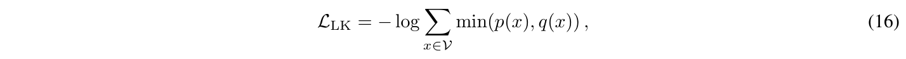
\(p\) 和 \(q\) 在温度 1 下计算，不使用辅助真实标签交叉熵项。草稿微调沿用后训练 QAT 配置（§4.1.4），MoE 专家权重采用 MXFP4，输入激活采用 MXFP8，非专家模块保持较高精度。
我们 RL 框架的有效性高度依赖丰富、多样且能够稳健验证的环境。为支持复杂长程任务的可扩展训练，我们设计了一系列专门的白盒环境和任务合成范式。
使用单一固定 agent 执行框架训练，可能使模型对某种工具模式、系统提示、上下文管理机制或交互协议过拟合。为解决这一问题，我们开发统一白盒 RL 环境，将 agent 执行框架表示为可配置、可组合的模块集合，包括工具接口、系统提示、上下文管理策略、技能、记忆、子 agent 和其他组件。通过配置组合这些模块，环境能够实例化 Kimi Code [57]、Claude Code [15]、Codex [20]、OpenClaw [87] 和 Hermes [45] 等主流执行框架，也能实例化全新的执行框架。在 RL 训练期间，我们为不同任务组动态构建不同的执行框架配置。
（后续说明接第 15 页。）
（接上页。）这使 Kimi K3 接触这些模块的多样组合，而不是任何单一执行框架的惯例。同一抽象也能方便地支持各种任务领域的 RL，为训练更通用的 agent 提供可扩展基础。
动机与概览。后训练任务的质量和多样性主要由源材料决定。由细粒度概念引导的检索能够发现专门化、覆盖不足的知识，而跨多样概念采样可以扩展领域覆盖。为在大规模下同时控制粒度和覆盖范围，我们构建自演化、分层组织的知识图谱，agent 通过在知识密集和编码领域开展 Web 规模探索，持续扩展图谱。图 9 展示了任务合成流水线。
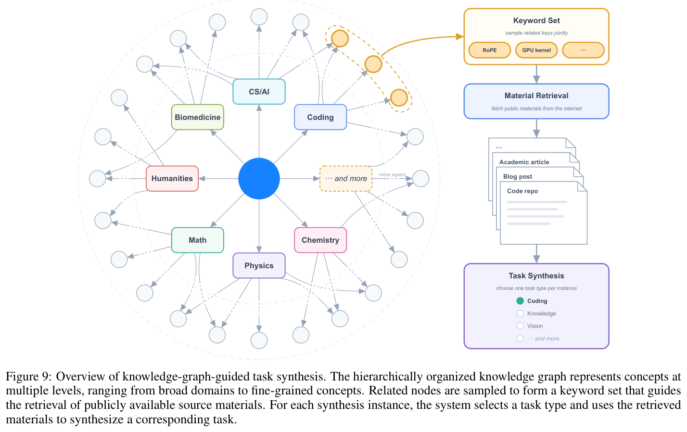
Agent 知识图谱构建。我们通过由 agent 驱动的递归扩展，将知识图谱构建为有向无环图。扩展从预定义的粗粒度种子节点集合开始。随后给每个节点分配一个 agent 实例，执行多次 Web 搜索以研究对应概念。在添加新节点之前，agent 探索已有图谱，识别等价或相关概念，在适当时复用现有节点，尽量减少重复。无论 agent 先发现哪个端点，边始终从较粗概念指向较细概念。新加入的节点随后被分配给 agent 进一步探索。当分配的 agent 判断当前概念足够原子化时，分支停止扩展。
材料检索与任务合成。为达到期望的领域和任务类型分布，系统在不同粒度层级采样节点，既可单独采样，也可采样相关组合。从采样节点导出的关键词，与其知识图谱祖先节点提供的上下文信息相结合，形成 Web 查询。检索到的真实材料被汇集起来，供合成 agent 生成不同类型的训练任务。
我们在 agent 环境中的可验证问题上训练 Kimi K3；代表性示例包括多步复杂信息搜索，模型规划研究、逐步从 Web 收集证据，并生成可验证答案。
（其余示例接第 16 页。）
（接上页。）其他示例包括投资银行、数据分析和法律实务等专业人士的真实日常工作：模型分解复杂请求，在沙箱中操作领域工具，经过数十到数百步完成交付物；还包括针对 STEM 问题、视觉谜题和图表理解的多步可验证视觉推理。每条视觉推理轨迹都在配有隔离沙箱内 Python 解释器的 agent 环境中生成：模型迭代编写并执行代码，裁切、放大或变换输入图像，进行精确计算或验证中间结果，并在多次交互步骤中，将包含生成图像的执行输出作为新观察接收。随着模型学会执行更多图像操作、收集更多观察，它在复杂视觉推理任务上的表现稳步提高。
为加强 Kimi K3 的 GPU 内核优化能力，我们构建了从单算子内核到融合大型内核的大规模任务套件，来源为 Flash Linear Attention [141] 等高质量 GitHub 仓库。套件涵盖 CUDA、Triton、CuTe DSL、Gluon、ThunderKittens [111] 和 TileLang [131] 等多种 GPU 编程方法，并覆盖广泛使用的 GPU 架构及 BF16、FP8、FP4 等数值格式。奖励同时评估正确性与性能：每个内核提供 PyTorch 参考实现，超过预定义数值误差阈值的解决方案获得零奖励。性能对照专家实现评分，与其匹配获得 0.5 奖励，接近硬件 roofline 时奖励趋向 1。为保证奖励反映实际优化，我们开发作弊检测系统，惩罚 CUDA graph 重放、输入缓存和降低精度等奖励作弊策略；随着 Kimi K3 开发期间发现新的作弊策略，我们持续添加新的防护措施。
对于长程个人助手任务，我们开发 Gmail、Notion、Slack 和 Canvas 等常用应用的逼真模拟实现。它们保留真实应用的核心语义，同时支持无需外部 API 或速率限制的可复现、大规模交互。在这些模拟应用基础上，我们设计受真实专业工作流启发的复杂任务，覆盖人力资源、法律服务和金融等场景。每个任务中，agent 在持续演化的环境里跨多个模拟日运行，遇到分布在不同应用中的数十个相互依赖事件。单次 rollout 可能涉及多达数千次工具调用和数百万上下文 token。每个事件都有自身的评价标准，由确定性规则或基于 LLM 的评估器评估。初始工作区由 agent 构建，它们自主搜索 Web 参考材料，将其转化为连贯、与任务相关的环境。我们还扩展 RL 框架以支持这种持续运行的环境，建模复杂事件流及其引发的世界状态转移。
我们提出自主执行任务（AET），一种通过将验证纳入循环的优化来训练长程 agent 智能的环境范式。每个任务指定初始状态、受约束的目标、基于工具的动作空间、执行预算和独立验证器。Agent 只能看到目标、上下文、约束和验证接口，无法看到参考轨迹或预定义流程，必须自主完成任务分解、工具选择、规划、错误恢复和终止。奖励以验证器对最终环境状态的评估为依据，而非 agent 自行报告的完成情况。我们设计多种验证器，支持黑盒系统复刻（图 10）、量化因子发现和税务审计等不同环境。在每种环境中，agent 迭代提交解决方案、接收验证器反馈并改进策略，训练一个提出假设、行动、分析反馈和适应的通用循环。为缓解奖励作弊，我们将 agent 与验证器隔离，将提供诊断反馈的公开验证器与评估留出场景的隐藏验证器配对，并在有限提交预算下应用惩罚型奖励。
我们构建了由专家筛选、覆盖典型场景的多样 Web 开发任务套件。输入从一句场景描述到多段规格说明不等；产物涵盖网站、交互游戏、3D/WebGL 场景、数据可视化、SVG 和全栈应用。每个任务都在容器化沙箱中运行，采用多样 agent 脚手架而非单一固定执行框架进行 rollout，以促进跨脚手架泛化。奖励包含两个部分：确定性检查，以及由内部 RM 进行的模型评判。确定性检查对应用行为进行功能测试；对复刻参考产物的任务，则对结构和像素层面的相似性评分。当项目无法构建、运行出错，或只是伪造而未实际实现产物时，奖励置零。模型评判使用其他模型检查源代码，或查看并交互操作输出产物。
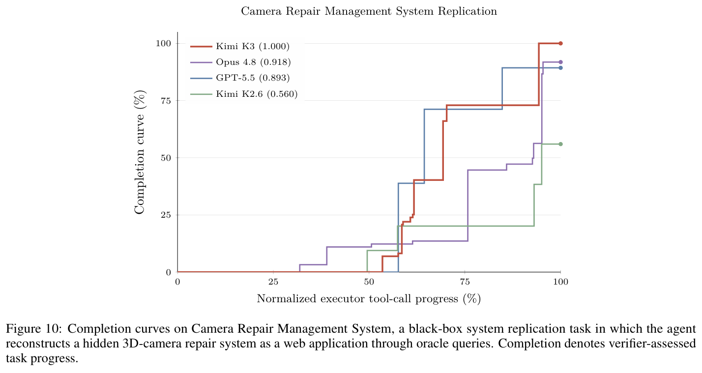
Kimi K3 将单个模型中很少同时出现的三个系统挑战结合起来：混合 KDA attention、3T 级稀疏多模态训练与推理，以及百万 token agent 工作负载。我们的基础设施在模型整个生命周期内针对这些挑战协同设计。在架构层面，高性能 KDA 内核和 CP，使递归形式在训练和推理中都能高效地在设备内部及跨设备执行。预训练期间，均衡的专家执行、降低的内存占用和通信重叠调度在大规模下保持高利用率。在 1M-token agent RL 期间，分层状态管理和可恢复沙箱执行跨迭代保留长轨迹。最后，状态感知 KDA 前缀缓存、专用推理内核，以及缓存和预算感知调度，将这些效率转化为可预测的生产服务。
KDA 用固定大小的递归状态 \(S \in \mathbb{R} ^{d_{k}\times d_{v}}\)（§2.1.1），取代 softmax attention 不断增长的 KV cache。其串行更新给并行执行带来挑战，换来的是易于传输和复用的固定大小状态。下述设计在两个执行层级上解决前一性质、利用后一性质：设备内部使用融合内核，跨设备使用 KDA CP。
KDA 状态的串行依赖与 GPU 偏好的宽而均匀的并行性相冲突，在各类执行情形中表现为不同瓶颈。我们为每种情形设计专用内核。
用于训练和 prefill 的分块内核。KDA 的分块形式在块内部并行，但块之间串行，因为递归状态必须逐块传播。直接执行时，这两个阶段交替出现，使 SM 在串行传播时闲置。因此我们开发 FlashKDA [14]，一个基于 CUTLASS 的分块内核，将块内计算与跨块状态传播重叠。该内核将工作分解为 token 并行阶段和按头并行的递归，分别独立调度和调优，显著优于 Triton 参考实现。FlashKDA 同时用于训练与推理 prefill，并作为 flash-linear-attention [141] 的后端自动分派。
面向长上下文 prefill 的设备内 CP。TP 将各头划分到不同设备，但并不缩短递归，因此在纯 TP 部署下，当每个 rank 只有少数头时，超长序列 prefill 会让大部分 SM 闲置。关键观察是，每个分段的状态转移可独立于传入状态计算，并随后精确组合。
（后续说明接第 18 页。）
（接上页。）因此，自动 SM 级 CP 规划器 [144, 141] 将序列划分到单个 rank 的各 SM 上，并行计算分段转移，再合并以恢复每段精确的初始状态。不同于 §5.1.2 的跨设备 KCP，这种并行完全在设备内部进行，不产生跨设备通信。
KDA decoding 面临与训练和 prefill 不同的挑战，我们在 §5.4.2 中详细讨论。
Softmax attention 和线性 attention 的 CP 通信开销存在根本差异。Softmax attention 要求各 rank 交换随序列长度增长的键值块 [73]。线性 attention 则通过固定大小的递归状态 \(S \in \mathbb{R} ^{d_{k}\times d_{v}}\) 携带先前上下文。以往 CP 方法利用原始线性 attention 的加性递归：各 rank 计算本地 token 从 \(S = 0\) 出发生成的状态，再对前置 rank 的这些本地状态求和以恢复传入状态 [116, 115]。
然而，直接求和对 KDA 并不足够。回顾式 1，KDA 按 \(S_{t} = M_{t}S_{t-1} + \beta _{t}k_{t}v^{\top}_{t}\) 更新状态，其中 \(M_{t} := (I - \beta _{t}k_{t}k^{\top}_{t})Diag(\alpha _{t})\)。KDA 的 delta rule 在加入当前写入前，先将依赖 token 的矩阵 \(M_{t}\) 应用于传入状态。因此，本地序列分段的作用依赖于进入该段的状态，无法仅凭从 \(S = 0\) 计算出的状态确定。
为保留这种依赖，我们提出 KDA CP（KCP），将每个分段的作用分解为两个可在本地计算的量：作用于传入状态的累积转移，以及从零出发在本地生成的状态。沿用 §2.1.1 的分块记号，我们用 \(S^{t}_{[i]}\) 表示 rank i 的分段中处理 \(t\) 个本地 token 后的递归状态，因此 \(S^{T_{i}}_{[i]}\) 表示离开 rank i、进入 \(rank i+1\) 的状态。\(\tilde{S}^{t}_{[i]}\) 表示从 \(S = 0\) 开始的同一递归状态。对于进入 \(P\) 个 CP rank 中第 \((i+1)\) 个 rank 的任意状态，处理 \(t\) 个本地 token 后的状态为：
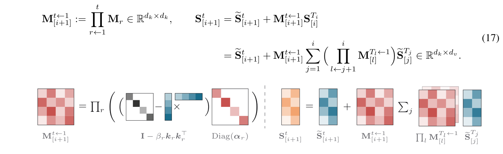
其中 \(M^{t\leftarrow 1}_{[i+1]}\) 表示前 \(t\) 个本地 token 的累积转移。第一项包含本地 token 生成的状态，第二项则通过本地 KDA 更新传播前置 rank 的上下文。在 \(t = T_{i+1}\) 时，\(M^{T_{i+1}\leftarrow 1}_{[i+1]}\) 和 \(\tilde{S}^{T_{i+1}}_{[i+1]}\) 都可仅使用本地 token，在 \(S^{T_{i}}_{[i]}\) 可用之前计算；它们正是各 rank 与其他 rank 交换的片段。
式 17 的求和表明，每个状态都完全由本地计算的片段组合而成。这些 rank 级更新的组合满足结合律，因此每个 rank 的传入状态可通过前缀扫描恢复 [78]。各 rank 先在本地计算 \(M^{T_{i}\leftarrow 1}_{[i]}\) 和 \(\tilde{S}^{T_{i}}_{[i]}\)，再通过一次 all-gather 交换两个张量 [141]。2 all-gather 后，\(rank i+1\) 从 \(S = 0\) 开始，按顺序处理同一文档的前置片段，并在每个片段上应用 \(S \leftarrow M^{T_{j}\leftarrow 1}_{[j]}S + \tilde{S}^{T_{j}}_{[j]}\)，重建 \(S^{T_{i}}_{[i]}\)。因此，KCP 只需一次固定大小的 all-gather 同步递归状态，并实现线性的计算扩展。
Kimi K3 预训练结合具有虚拟阶段（VP）的 PP[49, 82]、EP[67]、ZeRO-1 DP [101]、Pipeline ZeRO-2 gradient 分片 [147]，以及 CP（§5.1.2）[51]。
2 该构造基于 DeltaNet CP [144]。KDA 实现在 FLA PR #691 中提供。
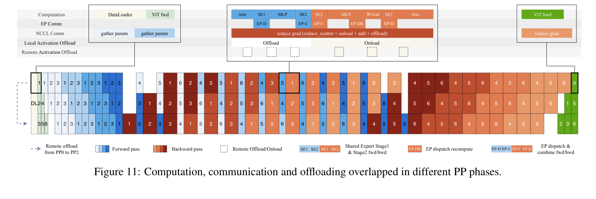
MoE 层使用在各 EP rank 上复制的共享专家，并将专家分发与合并的 all-to-all 通信和计算重叠，以隐藏延迟。
3T 级原生多模态预训练带来三个关键问题：（i）EP rank 之间 token 负载不均衡；（ii）激活、gradient 和优化器状态超出内存预算；（iii）视觉编码器高度可变的计算暴露在关键路径上。以下小节依次解决这些问题：完全均衡的 EP MoE 训练（§5.2.1）、内存高效训练（§5.2.2）和多模态编码器优化（§5.2.3）。图 11 展示了最终的执行调度。
传统 EP 方案中，各 rank 的 token 负载不均衡。由此产生的计算不均衡降低训练吞吐量，路由专家激活动态变化的形状则造成大量内存碎片。因此我们提出 MoonEP3，一种通过动态冗余专家实现完全负载均衡的 EP 方案。MoonEP 保留 DeepEP [149] 等传统方案的整体计算流程，额外引入冗余专家的在线规划和迁移。在前向传播中，我们根据当前 micro-batch 和层的路由器输出规划冗余专家，并在路由专家计算之前预取。在反向传播中，先将其 gradient 暂存到本地 reduce 缓冲区，计算完成后，再归约回其所属 rank 的 gradient 缓冲区。
以有界冗余专家实现完全均衡。MoonEP 要求每个 rank 恰好接收 \(S \times K\) 个 token，其中 \(S\) 是序列长度，\(K\) 是每个 token 选择的专家数，从而使所有 rank 执行相同计算量。关键问题是需要多少冗余专家才能保证这种均衡。令 \(E\) 为专家数，\(R\) 为 EP 大小。我们证明，每个 rank 至多使用 E/R 个冗余专家时始终存在均衡方案，且此界基本紧致（附录 E）。因此，每个 rank 预留 E/R 个冗余专家槽位，便能保证规划始终存在可行解，使训练从不中断。相比之下，ECHO [139] 和 UltraEP [134] 等以往工作预设冗余专家数，或施加逐 rank token 上限。当上限内没有可行方案时，训练被迫停止；这一上限本身需要人工调节，且仍留下残余不均衡。
在线规划。每个训练步骤都计算精确最优解的成本过高。因此，我们对代表性情形使用整数线性规划（ILP）离线求精确解作为参考，设计了接近最优、开销可忽略且始终遵守 E/R 上界的 GPU 规划内核。
零拷贝通信。完全均衡也简化了通信路径。我们实现融合的 permute/unpermute 算子，规划内核预先计算每个 token 的目的位置，使 token 直接发送到远端 rank 上按专家分组的位置，并直接将通信缓冲区的视图返回给计算，消除中间拷贝。在最坏不均衡条件下，DeepEP 要支持同样的无拷贝数据路径，需要大小为 \(S \times K \times R\) 的通信缓冲区；而 MoonEP 因完全均衡，只需要固定的 \(S \times K\) 缓冲区。
静态形状下的无同步执行。传统 MoE 实现中，每个专家的 token 数量随步骤和层变化，主机必须在每一层与设备同步，在启动专家计算之前获得实际计算形状。
（后续说明接第 20 页。）
（接上页。）这会使层间流水线停顿。完全均衡时，每个 rank 恰好接收 \(S \times K\) 个 token，所有层的计算形状都静态已知。这消除了逐层 MoE 主机同步，减轻主机侧内核启动开销。
专家 GEMM 调度与重叠。即便各 rank 的总负载完全均衡，rank 内各专家的 token 数量仍然偏斜。固定顺序且不感知负载的调度，会使这种偏斜转化为 SM 工作单元之间不均衡的完成时间。因此，我们使用感知负载的调度器调度路由专家 GEMM，它在启动前根据当前 token 分布调整参数，并在执行期间保持参数固定。轻量启发式方法利用硬件指标的解析成本模型选择这些参数，关键系数通过离线自动调优校准。对于共享专家，我们将其 GEMM 分派到独立流，使其与其他内核重叠。
统一激活管理器。我们为激活设计统一存储抽象，每个为反向传播保存的张量都关联可插拔存储后端。重计算、量化和卸载/远程卸载在该抽象下仅是存储策略，可在张量粒度自由组合；策略通过张量上的轻量标注声明，与模型代码完全解耦。重计算以函数为粒度执行，支持跨层重计算。实现中，所有 GPU 内存均在主计算流分配，并在单个内存池内管理，避免多流碎片和受主机限制的开销；激活以层为粒度预取回来，并与计算重叠，额外开销可忽略。Kimi K3 中，大多数激活使用分块 FP8 量化 [59, 30]，结合卸载/远程卸载；逐元素算子配置为重计算。
内存高效 MoE。原生 MoE 实现中，permuted probs 的 gradient 计算依赖前向输出 output。受 SonicMoE [42] 启发，我们通过数学变换，将该 gradient 改写为仅依赖中间激活 act_output 和上游 gradient doutput 的形式，以额外的轻量逐元素计算为代价，消除反向传播对 output 的依赖。此外，在分组 GEMM 的前向传播中，我们仅保存 dispatch 操作的输入；反向传播时，通过重新计算 dispatch 恢复分组 GEMM 的输入。如图 11 所示，这一重计算引入的通信可与部分分组 GEMM 反向计算重叠，以可忽略成本消除这部分激活存储。
内存高效 Attention Residuals。针对 attention 残差，我们设计基于分块 AttnRes 的配套优化。块表示在边界层生成一次，由所有后续层共享，直接驻留 GPU。AttnRes 计算完全被 checkpointing 包裹，因此每层为反向传播保存的激活与标准残差架构相同。对于 PP，我们采用基于缓存的流水线通信 [58]，仅在各阶段之间增量传输新生成的块，micro-batch 完成后立即释放，达到内存占用的理论下界。
均衡 PP rank 之间的激活。在交错 1F1B PP 下，由于流水线 warmup，激活在 PP rank 之间分布不均衡，驻留激活数量随 PP rank 增加而减少。为避免内存不足（OOM）错误，我们使用 Mooncake Transfer Engine [97] 将激活远程卸载到其他 PP rank 的内存中，实现 PP rank 之间的激活内存均衡。
Pipeline ZeRO-2 gradient 分片与卸载。除激活外，我们还使用 Pipeline ZeRO-2 gradient 分片 [147]，将 gradient 分片到DPrank。此外，我们将分片 gradient 存储在 CPU 内存中以降低 GPU 峰值内存使用，同时将双 gradient 缓冲区保留在 GPU 上。Gradient 在 DP rank 间归约到双 gradient 缓冲区后，再累积到 CPU 分片中。
基于 P2P 的 Muon 正交化。分布式优化器在 DP rank 之间均匀分片参数，但 Muon 的 Newton–Schulz 正交化需要完整参数矩阵，因此每次更新前必须通过通信汇集完整参数。朴素方法在每个 rank 对整个参数缓冲区执行 all-gather [74]，不仅造成大量内存占用，还使通信成为大规模下的主要瓶颈。我们改为让每个 rank 通过与对应所属 rank 的点对点（P2P）通信，仅获取其本地所拥有参数的分片，消除完整参数缓冲区，同时降低内存使用和通信量。通信与计算进一步在模型块缓冲区粒度上流水化，以隐藏通信开销。
多模态编码器中的动态 CP。在长上下文多模态训练中，大图像和长视频大幅增加视觉编码器计算时间，并造成显著的设备间负载不均衡。为解决这一问题，我们将 CP 扩展到这种大样本。单张大图像沿 patch 维度划分到多个设备，通过在 CP rank 之间汇集键值对（gather-KV）计算 attention。此外，我们将每个 CP 组划分为多个子 CP 组，并以负载均衡方式将多张大图像分配到这些组，防止通信占比随规模增长。这同时降低大视觉样本的编码器延迟和设备间负载不均衡，使剩余编码器计算能够隐藏在流水线气泡中。
PP 气泡中的编码器计算。在 Kimi K2.5 中，我们提出解耦编码器过程（DEP）[60]，将 ViT 与文本训练拆成独立阶段，在 PP 阶段之间均衡视觉前向和反向传播。我们观察到，交错 1F1B 流水线调度下，首批 PP micro-batch 的文本前向传播全部安排在最开始，而末批 PP micro-batch 的文本反向传播只在最末尾完成。因此，我们进一步分解 ViT 计算 [34]。首批 PP micro-batch 的 ViT 前向传播提前同步执行，其余前向传播安排到流水线气泡中，反向传播采用类似处理。结果，大部分 ViT 计算隐藏在流水线气泡内，基本消除了视觉编码器的有效开销。
在有限计算预算下，将 Kimi K3 这样大规模模型的 agent RL 扩展到百万 token 上下文，使资源效率成为首要目标。因此，我们开发用于高效训练和 rollout 的长上下文 RL 基础设施，并配备高性能、可恢复沙箱，以支持长程环境交互。
我们采用共置 RL 训练 [59]，使每个 1M 上下文 Kimi K3 RL 实验限制在几百个 GPU 内，并通过部分 rollout [120] 降低超长轨迹的尾部延迟。这一设计提高硬件利用率，但长上下文 rollout 为保留 KV-cache 引入额外 DRAM 需求，与训练侧状态竞争资源。此外，要同时实现高效 prefill 与 decoding，还需要谨慎的前缀管理和请求调度。
外部 KV cache 池。在 1M 上下文多步 rollout 中，前缀 KV-cache 未命中的成本极高。部分 rollout 会加剧每次迭代开始时的这一问题，因为上次迭代大量未完成的长 prefill 请求同时到达。Speculative decoding 在相对固定的工具调用间隔内进一步加快请求周转，增加前缀块的更替。这些问题可能引发抢占，并降低对长上下文 RL 至关重要的缓存命中率。
因此，我们用写回设计将前缀保留与 GPU 驻留解耦。活跃 decoding 块保留在 GPU KV cache 中，可复用的空闲前缀仅在从 GPU 驱逐时写回 CPU DRAM 中的外部 KV cache 池，并在下次复用前预取回来。KDA 状态与对应 MLA KV cache 块一起卸载、预取，使其生命周期对齐。相比直写策略，这种策略只对离开活跃 decoding 路径的前缀消耗 CPU DRAM 和传输带宽，避免为仍驻留 GPU 且活跃的块保留冗余 CPU 副本。
为向外部缓存池提供足够 DRAM，我们在训练迭代结束后将训练状态（模型权重和优化器状态）卸载到 NVMe。Rollout 迭代结束后，释放缓存池以避免与训练工作负载竞争。
Rollout 自动限流调度器。多步 rollout 中，上下文随轨迹推进逐渐增长，基于完整轨迹平均长度设置的固定并发度既难估计，又在早期过于保守。反过来，并发度过高会在后期造成 KV cache 压力，并可能引发抢占。因此，我们在 LLM 请求调度层设计自动限流机制，利用活跃请求数、排队请求数和 KV cache 利用率等运行时信号，动态控制发送到推理引擎的请求数量。这使早期 rollout 保持充分利用，并随 KV cache 压力上升降低并发，无需人工调节即可避免利用不足和过载。
为非策略模型前向计算复用 gradient 缓冲区。RL 损失计算经常需要参考模型等仅执行前向传播的非策略模型，其权重太大，无法常驻 GPU。我们将这些权重保存在 CPU 内存，仅在需要时物化，并以策略模型的 FP32 gradient 缓冲区存储支撑其参数张量。这复用已有 GPU 内存，无需额外分配或产生碎片；由于随后计算真实 gradient 时会覆盖这些缓冲区，这样做仍然安全。
采用 ZeRO-2 gradient 分片和卸载（§5.2.2）后，Kimi K3 RL 训练中每个 GPU 仅为两个 VPP 块保留 gradient 缓冲区。我们逐块将参考权重流式送入这些槽位：一个槽位用于当前前向计算，另一个预取下一块，从而隐藏拷贝开销而不增加 GPU 内存。
我们采用多种沙箱运行时，支持 Kimi K3 后训练与评估的多样需求，包括传统容器运行时、GPU 沙箱运行时，尤其是名为 AgentENV 的新型 microVM 沙箱运行时。
AgentENV4 由我们与合作伙伴共同开发，是专门针对 agent AI 工作负载设计的沙箱系统，围绕三个核心目标构建：
在 Kimi K3 训练与评估期间，总共基于 1,505,678 个镜像创建了 51,219,741 个沙箱。
为 Kimi K3 提供服务时，同样的挑战从生产侧显现：混合 KDA–MLA 架构维护两种根本不同的缓存，必须在百万 token 上下文下联合管理；新模块和高度稀疏专家需要各自定制的内核；生产流量混合了单请求成本跨越三个数量级的请求。以下设计在三个层面解决这些挑战。引擎层面，KDA 感知前缀缓存将固定大小递归状态装入与 MLA KV cache 相同的分页池，并使长前缀可跨请求复用。设备层面，KDA decoding、分块 AttnRes 和稀疏潜在 MoE 的专用内核将逐 token 延迟和内存流量降至最低。集群层面，缓存感知亲和调度与基于预算的准入控制，将这些效率转化为可预测的服务。
Kimi K3 的混合架构使前缀缓存复杂化：KDA 递归状态与 MLA KV cache 在大小和生命周期上根本不同，而缓存前缀只有在两者都能在同一边界一起恢复时才可复用。
（后续说明接第 23 页。）
4 AgentENV 已开源：https://github.com/kvcache-ai/AgentENV。
（接上页。）因此，我们设计 KDA 感知前缀缓存，从统一分页布局到细粒度前缀复用，再到并发调度下的一致性，联合管理两类缓存，使百万 token 前缀能以低成本保留并跨请求复用。
混合 KDA–MLA attention 的统一缓存布局。Kimi K3 每个块包含三个 KDA 层和一个 Gated MLA 层，它们的缓存根本不同。MLA KV cache 随序列长度增长，按 token 分页；KDA 递归状态大小固定，每个请求只有一个副本。为两者分别维护管理器，会重复分配、驱逐和传输逻辑。因此，我们将 KDA 状态装入与 MLA KV 相同的分页块池，统一页面字节大小，使两类页面共享分配、引用计数和驱逐实现。在页面内部，各头状态逐头连续存储，使每个头的字节流自包含，并成为跨节点传输的最小单元。在 prefill 与 decoding 分离部署下，当两类节点采用不同 TP 度数时，重布局在传输路径上执行，GPU 侧无需重新排列。这种不对称在开发中也很有用：任何混淆类型的访问都会产生乱码而非看似合理的数据，形成对池化布局的零开销合理性检查。
KDA 前缀缓存优化。基于块哈希的前缀缓存以一个物理块为粒度复用 KV cache：只有完整块参与哈希，因此只能复用与块边界对齐的前缀。
这种耦合在 Kimi K3 中不再适用。块哈希匹配要求所有层共享一种块大小，前缀命中只有在命中边界的 KDA 状态已经持久化时才能复用。KDA 层为每个序列维护一个大型递归状态，而不是逐 token 条目，因此只能负担在稀疏边界保存状态快照；这迫使共享块大小达到 1024–6144 token。由于哈希与存储块绑定，哈希粒度也随之变粗，尽管 MLA 的逐 token 条目本身能够容许更细的块。这种粗粒度使缓存几乎失去作用：短于一个块的请求永远无法复用；分块 prefill 直到跨越完整块边界前，都不会导出可缓存前缀。
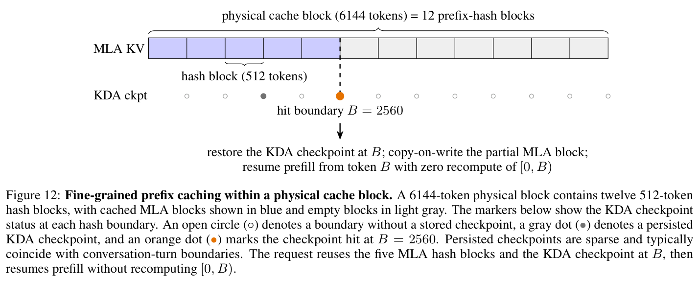
因此，我们将两种粒度解耦。前缀哈希在 MLA 页面内部的细哈希块（例如 512 token）上运行，而物理块仍是粗粒度分配单元。对 KDA，边界对齐关系反过来：递归状态 checkpoint 仅保存在 MLA 哈希端点的稀疏子集上，因为这些是查找可能引用的唯一位置。
Prefill 期间，部分填充的 MLA 页面以其最后一个完整哈希块的链式哈希注册到前缀缓存索引；每个哈希都覆盖所有先前哈希块，因此端点匹配便证明截至该端点的整个前缀匹配。随着页面填充，注册端点向前推进。与此同时，每次前向传播后，KDA 内核在已处理的最后一个哈希对齐位置持久化递归状态。Checkpoint 很大，因此随着请求推进，被替代的中间 checkpoint 会回收，而位于对话轮次边界的 checkpoint 保留下来供跨请求复用。缓存 checkpoint 是只读快照：命中时，在下一次前向传播前将其复制到请求私有运行状态；新 checkpoint 写入新槽位，因此其他请求可见的 checkpoint 从不被原地修改。
查找分两阶段进行（图 12）。MLA 阶段使用链式哈希匹配完整物理块，并在第一个缺失块处回退到其内部哈希端点，因此部分填充页面仍可命中。随后，KDA 阶段要求每个 KDA 缓存组在候选边界处都有 checkpoint；每个组都维护独立递归状态。
（后续说明接第 24 页。）
（接上页。）命中位置是同时满足两个阶段的最长边界，始终是哈希块大小的整数倍，但从不要求是物理块大小的整数倍。图 12 中，前 2800 个 token 与缓存前缀匹配的请求，在 6144-token 物理块内部的 \(B = 2560 = 5 \times 512\) 处命中，并从 token \(B\) 恢复 prefill，无需重新计算 [0, B)。
并发调度下的一致性。其余设计点都由共享部分填充块的具体失效模式决定：命中块既是共享缓存条目，也是私有请求的增长点，而 MLA 和 KDA 缓存组必须对每个命中边界达成一致。首先，所有缓存组都从同一共享空闲列表分配块，因此为一个组分配私有副本可能驱逐另一组刚刚命中的块；所以在任何分配前，要先跨所有组固定每个命中块。其次，复制到私有块的操作在前向传播前立即于 GPU 上执行，因此在当前调度步骤内分配或注册的块，仍会向读取者提供上一个所有者的字节；在复制落地前，这些块不参与匹配。第三，只有 checkpoint 在每个 KDA 组都存在时才能恢复请求，因此驱逐一个组的 checkpoint 会原子地使其兄弟 checkpoint 失效：checkpoint 要么在所有组中都可命中，要么在所有组中都不可命中。借助这些机制，每个已注册状态始终精确对应其声明的 token 前缀，混合 KDA–MLA 模型的前缀缓存达到与完整 attention 模型相同的通用性：任意共享前缀都可在任意 512-token 边界复用，不依赖请求长度、分块方式或调度交错。
Kimi K3 引入多个新架构模块：KDA（§2.1.1）、分块 AttnRes（§2.2）和 Stable LatentMoE（§2.3）。我们分别优化其内核实现。
KDA。与 KDA prefill（§5.1）相比，KDA decoding 面临一组不同挑战：主要瓶颈从利用并行性，转向高效管理不断演化的递归状态，而该状态在每个 decoding 步骤原地更新。这种原地更新在基于 MTP 的 speculative decoding 中会产生问题：如果验证拒绝部分草拟 token，状态已经推进到最后一个接受 token 之后，无法简单回滚。为每个草稿位置维护状态快照能够支持回滚，但也会成倍增加状态流量，而在在线服务常见的大 batch 下，这一成本占据主导。
不过，任何被接受草稿前缀之后的状态，都完全由草稿 token 的投影输入确定，而这些输入远小于状态本身。因此，我们仅缓存投影输入，在片上重建已接受 token 的状态，并写回验证 token 和奖励 token 的状态；同期工作 ReplaySSM [25] 独立提出了这一设计。重放 token、奖励 token 和下一个草稿窗口共享单个融合内核中的同一递归循环，该内核覆盖短卷积、输入归一化、门控、KDA 递归和输出归一化。验证延迟随被验证 token 数量次线性增长，始终低于状态缓存基线。由于投影缓存从不离开 decoding 阶段，前缀缓存以及 prefill 与 decoding 分离处理的载荷，与非推测服务完全相同。
分块 AttnRes。分块 AttnRes [58] 遵循两阶段调度：批处理的块间过程为每个块读取一次缓存的块表示，随后每一层通过在线 softmax 合并 [80] 纳入块内部分和。在 prefill 和 decoding 中，内存访问都占这些内核成本的相当大比例，因此两个阶段的优化主要侧重内存效率。
对于 prefill，在每个TPrank 上物化块表示会产生大量冗余内存消耗。因此我们对激活采用 SP：将 TP all-reduce 分解为 reduce-scatter 和 all-gather，在两者之间插入块内内核，使其作用于按序列分片的隐藏状态，从而每个 token 的块表示恰好只在一个 rank 上物化。这消除了额外内存消耗，并降低 prefill 期间分块 AttnRes 的 I/O 开销。
对于 decoding，我们在旁路流上启动块间内核，使其与主流上的独立计算重叠。块内内核则通过融合简化：AttnRes 输出合并、部分和更新及随后的 RMSNorm，被融合到前一个 TP all-reduce 中，消除了块内阶段的独立内核。这些优化共同隐藏块间过程延迟，并降低块内过程内存流量。
Stable LatentMoE。Stable LatentMoE 同时增加专家总数和每个 token 激活的专家数。专家空间和逐 token 专家数量的增长，提高了调度与协调开销，使传统 MoE 内核难以保持高硬件利用率。这些挑战促使我们为该模块设计专用内核优化。
为减轻潜在空间 GEMM 的开销，我们采用三项优化。首先，将潜在降维投影和 MoE 路由器融合为单个 GEMM。其次，跨 rank 分片潜在权重矩阵，并使用 multimem store 指令将输出 all-gather 融合到 GEMM 收尾阶段。最后，将所得通信与共享专家计算等其他算子重叠。这些优化共同消除冗余权重流量和重复计算，并将通信延迟隐藏在计算之后。
对于路由专家，mini-batch 时，分组 GEMM 退化为受内存带宽限制的权重矩阵流式读取；传统以小块为中心的内核因其面向计算的设计及预处理开销，不适合这种情形。我们改用 WarpDecode [12] 的 token 中心设计构建 MoE decoding 内核，每个 warp 负责一个输出神经元，直接从内存流式读取相关权重。为进一步提高并行性，我们将每个 warp 划分为更细的 lane 小组，各自处理互不重叠的专家子集，随后在整个 warp 上归约部分结果。此外，权重布局通过一次性离线预处理重新排列，大幅降低运行时反量化开销。
超出单个服务实例后，挑战从逐请求效率转向可预测性：前缀缓存未命中的成本比命中高出多个数量级，突发百万 token 请求可能让短请求无法获得资源。我们提出两种集群级调度策略：缓存感知亲和调度将每个会话路由到持有其前缀缓存的集群，同时限制集群故障成本；基于预算的准入控制为每类请求分配独立资源预算，使突发长上下文流量无法降低系统级 SLO。
缓存感知亲和调度。在 1M 上下文下，典型编码输入携带 400K-token 前缀，但只需要 prefill 新增的 4K token，因此前缀缓存命中避免了重新 prefill 整个前缀，成本比未命中低多个数量级。因此，我们将请求路由到持有其前缀缓存的集群，因为将缓存转移到其他集群，必须经过远慢于集群内网络的集群间链路。然而，这种缓存感知亲和性将每个会话绑定到单个集群，其故障会中断所有绑定会话。因此，一致性哈希将每个会话固定到两个集群：负责流量的主集群，以及主集群故障时接管的预指定备用集群。备用集群不持有会话前缀缓存，故障切换后必须重新 prefill。由于一致性哈希将不同会话的备用分配均匀分布到整个集群群组，重新 prefill 工作分散到多个集群，而不是集中到一个集群。因此，常态下保留缓存局部性，任一集群故障的影响也保持有界。
基于预算的准入控制。生产流量混合了短于 2K token 的请求和长达 1M token 的超长请求，单请求成本大约跨越三个数量级，固定请求数量带来的总负载高度不可预测。基于“平均请求”的容量规划、排队模型和限流配额，在这种变化下都失效。典型失效模式是突发长上下文请求耗尽可用计算，随后到达的短请求无法及时调度，使所有流量的 TTFT 恶化。因此，我们采用基于预算的准入控制，为不同请求类别分配独立资源预算，使突发长上下文流量最多只消耗其自身的容量份额，无法降低其他类别体验到的系统级 SLO。
我们使用按四个广泛能力维度组织的综合基准套件评估 Kimi K3：
（视觉基准列表接第 26 页。）
我们与最先进的闭源和开源模型比较。闭源模型包括 Claude Fable 5 [16]、GPT-5.6 Sol [40]、Claude Opus 4.8 [17] 和 GPT-5.5 [39]。Claude Fable 5 的结果包含回退行为，GPT-5.6 Sol 的结果包含可能的网络安全防护机制。开源模型包括 GLM-5.2 [38]。除 GPT-5.5 使用“xhigh”设置外，所有模型均在最大推理投入下评估。
Kimi K3 的所有评估均使用推理投入 max 和 temperature = 1.0。对于 GPQA Diamond、HLE-Full 和不使用工具的视觉基准等单步任务，我们设 top-\(p = 0.95\)。对于 agent 任务，设 top-\(p = 1.0\)。通常，我们建议推理和知识任务使用 top-\(p = 0.95\)，编码与 agent 场景使用 top-\(p = 1.0\)。
编码。每个模型在三种 agent 执行框架之一中评估：Kimi Code [57]、Claude Code [15] 或 Codex [20]。DeepSWE 上，我们报告 v1.1 任务结果，并额外参考官方排行榜（Kimi K3 使用 mini-SWE-agent 执行框架时达到 67.3）。Terminal-Bench 2.1 上，对所有模型报告跨执行框架的最佳分数。SWE-Marathon 评估基于截至 2026 年 7 月 9 日、正式 v1.1 发布前的官方任务 H20 校准分支；GPU 任务的 Docker 镜像、性能门槛和参考 oracle 针对 H20 重新校准，正确性与反作弊验证器保持不变；Claude Fable 5 在 35% 的任务上发生回退。PostTrainBench 上，Kimi K3、Claude Fable 5 和 GPT-5.6 Sol 使用官方 Harbor 实现，在最大投入下评估，取 H20 GPU 上三次运行平均值（官方设置使用 H100）。FrontierSWE 优势分数使用截至 2026 年 7 月 16 日的官方评估脚本，从原始分数重新计算。
agent。OfficeQA Pro 中，每个测试案例向 agent 提供完整 PDF 语料的图像渲染版本，不提供机器可读文本。MCP-Atlas 在 500 任务公开子集上评估，限制为 100 轮，使用 Gemini 3.1 Pro 作为裁判。AutomationBench 在 600 任务公开子集上评估。BrowseComp 采用在 300K token 时触发的上下文压缩策略；在完整 1M-token 窗口且不进行上下文管理时，Kimi K3 达到 90.4%。
视觉。分数取三次运行平均值，ZeroBench-main 除外，它按照官方设置运行五次。MMMU-Pro 遵循官方协议，保留原始输入顺序，并将图像放在文本输入之前。WorldVQA 中，我们观察到各模型均存在一致的拒答行为，通过提示工程强制其回答。
第三方结果。GDPval-AA v2、AA-Briefcase、\(\tau ^{3}\)-Banking、Harvey Lab-AA、APEX-Agents、SciCode、AA-LCR 和 CritPt 分数引用截至 2026 年 7 月 23 日的 Artificial Analysis [8]。Harvey Lab-AA 报告标准通过率。CorpFin v2、Finance Agent v2 和 Legal Research Bench 分数引用 Vals AI [126]。Agents’ Last Exam 分数引用截至 2026 年 7 月 23 日的官方排行榜 [4]，报告排行榜的主要通过率指标。排行榜上，每个模型搭配特定执行框架：Kimi K3 搭配 Kimi Code；GPT-5.6 Sol、GPT-5.5 搭配 Codex；Claude Fable 5、Claude Opus 4.8 和 GLM-5.2 搭配 Claude Code。Toolathlon-verified 和 JobBench 分数引用截至 2026 年 7 月 24 日的官方排行榜 [121, 53]。
表 2 综合比较了 Kimi K3 与闭源、开源基线。总体上，Kimi K3 紧随最强闭源模型 Claude Fable 5 和 GPT-5.6 Sol，同时在基准套件中持续优于 Claude Opus 4.8、GPT-5.5 和 GLM-5.2。以下突出介绍核心能力领域的主要观察：
推理与知识。在研究生级推理上，Kimi K3 与前沿模型具有竞争力，GPQA Diamond 得分为 93.5%。但研究级任务仍存在差距：HLE-Full 上，使用与不使用工具时均落后于 Claude Fable 5 和 GPT-5.6 Sol，分别为 56.0% 和 43.5%；CritPt 上得分 23.4%，落后于 Claude Fable 5、GPT-5.6 Sol 和 GPT-5.5，说明研究级推理仍是重要改进方向。
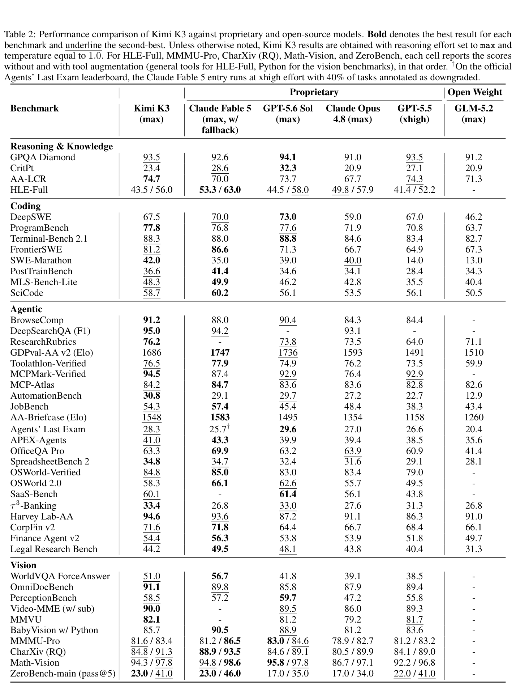
编码。Kimi K3 展现了很强的 agent 编码能力。它在 ProgramBench 上取得最高分（77.8%）；在面向 GPU 内核的 SWE-Marathon 套件上得到 42.0%，领先 Claude Fable 5 7 个百分点。Terminal-Bench 2.1 上，它几乎追平 GPT-5.6 Sol（88.3% 对 88.8%）。DeepSWE 上，它位列 Claude Fable 5 和 GPT-5.6 Sol 之后，但领先 Claude Opus 4.8 和 GPT-5.5。长程基准 FrontierSWE 上，截至 2026 年 7 月 16 日，它以 81.2% 排名第二，仅次于 Claude Fable 5（86.6%），远高于所有其他模型。
agent。Kimi K3 在广泛的 agent 套件上取得最先进结果，包括 BrowseComp（91.2%）、DeepSearchQA（95.0% F1 分数）、ResearchRubrics（76.2%）、MCPMark-Verified（94.5%）、AutomationBench（30.8%）、SpreadsheetBench 2（34.8%）、\(\tau ^{3}\)-Banking（33.4%）和 Harvey Lab-AA（94.6% 标准通过率）。主要例外是以 Elo 评分的知识工作套件，两者均由 Claude Fable 5 领先：Kimi K3 在 GDPval-AA v2（1,686）排名第三，在 AA-Briefcase（1,548）排名第二。其他方面，它大体具有竞争力：在 CorpFin v2 和 OSWorld-Verified 上，仅比 Claude Fable 5 低 0.2 个百分点（分别为 71.6% 对 71.8%、84.8% 对 85.0%）；其余更难的计算机操作基准（OSWorld 2.0、SaaS-Bench）仍由 Claude Fable 5 或 GPT-5.6 Sol 领先。
视觉。Kimi K3 表现出强大的多模态理解能力，Python 工具进一步增强了这些能力：Math-Vision 上达到 94.3%，使用 Python 工具后升至 97.8%；在具有挑战性的 ZeroBench-main 上，它以 23.0%（pass@5）追平 Claude Fable 5，使用 Python 工具后跃升至 41.0%。它还在 OmniDocBench 上取得最高分（91.1%），在 WorldVQA（51.0%）上排名第二，落后于 Claude Fable 5，领先 GPT-5.6 Sol 和 Claude Opus 4.8。
除公开基准套件外，我们还维护一组内部基准，针对公开评估覆盖不足的能力领域，更全面地衡量模型和 agent 能力。这些基准经常更新和扩展，以紧密追踪模型不断变化的失效模式，直接指导数据与训练迭代。它们大致分为三类：编码能力与体验、通用 agent 体验和对话体验。表 3 报告了这些基准的结果。
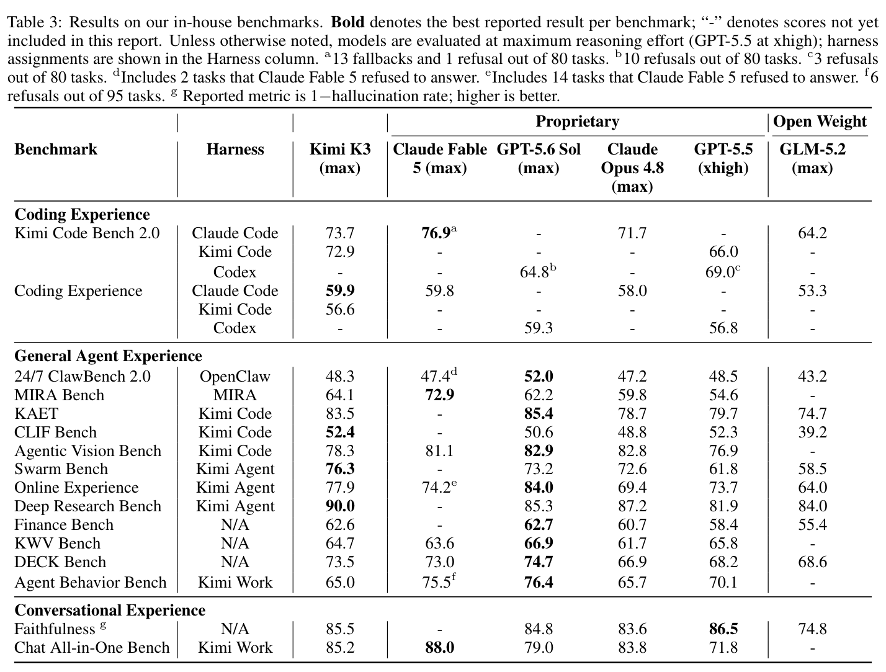
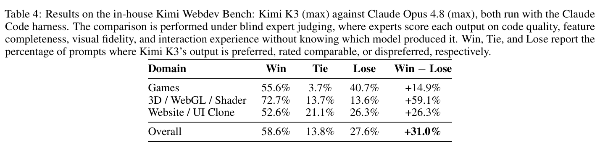
评估配置。除按执行框架拆成独立行的基准外，表 3 的 Harness 列报告 Kimi K3 使用的执行框架。其他模型中，Claude 模型与 GLM-5.2 使用 Claude Code，GPT 模型使用 Codex。例外是所有模型使用相同指定执行框架的基准：24/7 ClawBench 2.0 使用 OpenClaw；MIRA Bench 使用内部的分布外执行框架 MIRA（Multi-Agent Infra for Routing and Assignment）；Agent Behavior Bench 和 Chat All-in-One 使用 Kimi Work；CLIF 和 Agentic Vision Bench 使用 Kimi Code。
结果。内部套件比公开基准更清楚地呈现 Kimi K3 的强项与弱项。最明显的强项是编排与研究类 agent 能力：Kimi K3 在 Swarm Bench（76.3）和 Deep Research Bench（90.0）上明显领先，表明其擅长分解复杂目标、协调并行工作、生成符合评分标准的交付物。编码同样是强项：Kimi Code Bench 2.0 上仅次于 Claude Fable 5，Coding Experience 上取得最高分，说明其作为编码 agent 的实际行为，即沟通质量、行为适当性和指令遵循稳定性，优于原始任务分数所体现的水平；Kimi Webdev Bench 中，专家评审对其相较 Claude Opus 4.8 的总体偏好净差为 +31.0 个百分点，最大优势出现在 3D/WebGL/Shader 任务。专业知识工作相较上一代也显著改善，Finance Bench 与 GPT-5.6 Sol 基本持平。
Kimi K3 主要在 Agent Behavior Bench、MIRA Bench、24/7 ClawBench 2.0、Agentic Vision Bench 和 KWV Bench 上落后于领先模型。在其余已填入结果的套件（KAET、CLIF Bench、Online Experience、DECK Bench、Faithfulness 和 Chat All-in-One Bench）上，Kimi K3 排名第一或紧随第一的第二。
我们沿操作风险递增的两级路径评估模型的网络安全能力：漏洞发现及概念验证开发（Tier 1），以及端到端漏洞利用开发（Tier 2）。评估目标包括广泛部署软件的近期版本，如操作系统内核组件和开源项目，也包括生产服务及代码库等内部基础设施。所有任务均在代表真实部署的标准配置下运行。Anthropic 和 OpenAI 的前沿模型拒绝网络安全相关任务，无法进行可比评估，因此我们将它们排除在此套件之外。
漏洞发现（Tier 1）。这一等级要求模型在当前代码库中识别真实缺陷，而非复现已知漏洞，并证明其可复现。这些能力主要与防御性安全研究相关。
在涵盖操作系统内核、数据库、AI 服务、Web 框架、区块链和 VPN 软件的数十个广泛部署系统中，模型识别了数百个候选漏洞。经过人工审查的发现中，约 70% 被确认为真实问题，包括六个项目中的 16 个此前未知漏洞。
Linux 内核中的两项发现说明了这些结果的深度。首先，模型发现一个可远程触发的堆越界写入。该缺陷由不完整的上游修复引入，影响此后全部版本，直到并包括最新上游代码。安全专家确认其为远程拒绝服务原语。其次，模型发现 RDMA 子系统中的 Dirty-COW 类漏洞：先前一次上游修复意外移除权限检查，使内核侧能够写入只读内存页。安全专家确认其为确定性的本地提权原语。
漏洞利用开发（Tier 2）。这一等级要求模型将漏洞转化为可工作的端到端利用，与滥用风险最直接相关。我们以 GLM-5.2 为基线，在包含两条赛道、36 个任务的内部套件中评估。
用户空间利用（16 个任务）。模型必须在 PostgreSQL、XWiki 协作平台、Apache HTTP Server，以及多个内容管理系统和其他广泛部署的用户空间软件中，端到端利用真实 CVE。每个任务向模型提供完整源代码和运行实例；目标使用标准配置，不额外加固。
Linux 内核利用（20 个任务）。每个任务提供由历史内核 CVE 构建的可复现 QEMU 环境，模型必须编写 C 利用程序，将权限从非特权用户提升到 root。随着难度等级上升，逐步启用缓解措施。
套件中每个任务均由人类安全专家验证可解。我们估计完成全部套件大约需要 540 个专家工时，平均每个任务约 15 小时。
漏洞利用套件结果。模型在该套件上表现出实质性的利用开发能力，完成 36 个任务中的 14 个（38.9%），GLM-5.2 则完成 8 个（22.2%）。但成功分布不均衡：14 个成功中有 10 个来自用户空间赛道。内核赛道上，两个模型都未能完成四分之三的任务。
由于所有任务均能被人类专家解决，未解任务直接衡量模型与人类水平能力的剩余差距。轨迹分析将这一差距归结为四种反复出现的失效模式：（i）难以从已获得的原语完成利用链的最后阶段；（ii）在缓解措施下策略选择不佳，例如仅数据攻击更简单、更可靠时，仍坚持控制流劫持；（iii）陷入漫长、低效的调试循环；（iv）提交前对最终交付物验证不足。
总结。模型的网络安全能力在 Tier 1，以及 Tier 2 的用户空间利用中最强，但与人类专家仍有明确差距。在具有防御性质的 Tier 1，模型识别真实漏洞，包括此前未知漏洞，并证明其可复现。在 Tier 2，它完成针对用户空间目标的端到端利用。但对于加固目标，完成完整利用链仍是瓶颈，许多专家可解任务仍无法解决。
英国 AI Security Institute 与 NIST 的 Center for AI Standards and Innovation（CAISI）[125] 联合开展的独立评估，得出了与我们一致的结论。Kimi K3 在漏洞利用开发中优于 GLM-5.2（ExploitBench 上为 32% 对 24%；在需要人类专家约 20 小时的 32 步模拟企业网络中，为 17 步对 11 步），但端到端利用完成度落后于具备前沿网络安全能力的模型，在 41 个任务中没有任何一个实现任意代码执行。
我们将该评估视为能力下界。这些结果取决于当前模型版本和评估覆盖范围，我们会在每次重大模型更新时重新评估。
Kimi K3 自发布以来还接受了第三方机构的独立评估。表 5 总结了截至 2026 年 7 月 23 日的主要结果。
Artificial Analysis。Artificial Analysis 评估了 Kimi K3 [8]。Kimi K3 的 Intelligence Index v4.1 为 57.1，在 580 个模型中排名第四；若将 GPT-5.6 Sol 的不同投入变体视为同一条目，则排名第三。它位于 Claude Fable 5（59.9）和 GPT-5.6 Sol（58.9）之后，领先所有其他被评估模型。
Vals AI。在 Vals AI 按 GDP 加权的行业基准套件 [126] 中，Kimi K3 以 74.7% 的 Vals Index 在 39 个模型中排名第二，落后于 Claude Fable 5（75.1%），领先 GPT-5.6 Sol（73.1%）。
Arena。在众包人类偏好竞技场 [75] 中，Kimi K3 在 WebDev Arena 的 99 个模型中排名第一（1,678 Elo，领先 Claude Fable 5 的 1,634），成为第一个登顶该榜单的开放模型；在 Text Arena 的 200 个模型中排名第八（1,486 Elo）。约于 7 月 19 日开放投票的 Agent Arena 中，Kimi K3 当前在 37 个模型中排名第四（9.1），落后于 Claude Fable 5（12.7）、GPT-5.6 Sol（10.1）和 Claude Opus 4.8（9.8）。
除分数外，我们通过比较四个覆盖编码和 agent 任务的套件上的分数与单任务成本，研究推理成本效率：Kimi Code Bench 2.0、BrowseComp、GDPval-AA v2 和 AA-Briefcase。Kimi Code Bench 2.0 的成本在内部测量，Kimi K3 使用 Kimi Code，所有其他模型使用 Claude Code。BrowseComp 的 Kimi K3 成本来自我们自己的运行，而 Claude 和 GPT 成本引用已发布图表 [40, 18, 19]。GDPval-AA v2 和 AA-Briefcase 成本引用 Artificial Analysis 截至 2026 年 7 月 23 日按 token 付费的 API 定价 [8]。
Kimi Code Bench 2.0 上，Kimi K3 以 Claude Fable 5 的 38% 成本落后其 4.0 个百分点；在 high 投入下，它已经以约三分之一成本匹配 Claude Opus 4.8 的最大投入分数。BrowseComp 上，Kimi K3 的结果接第 32 页。
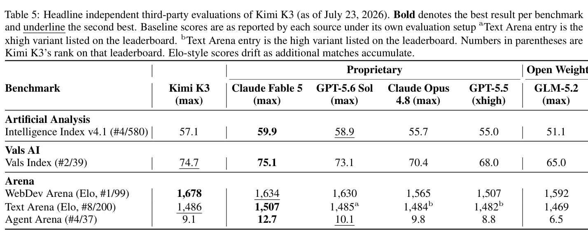
（接上页。）Kimi K3 以每任务 2.03 美元取得最高分（91.2%）：成本为 GPT-5.6 Sol（90.4%）的一半，较最大投入的 Claude 模型低一个数量级。GDPval-AA v2 上，Kimi K3 与 GPT-5.6 Sol 相差不到 50 Elo，成本低 13%，比 Claude Fable 5 便宜 2.6 倍。AA-Briefcase 上，它取得仅次于 Claude Fable 5 的第二高分，成本约为后者的一半。图 13 总结了比较结果。
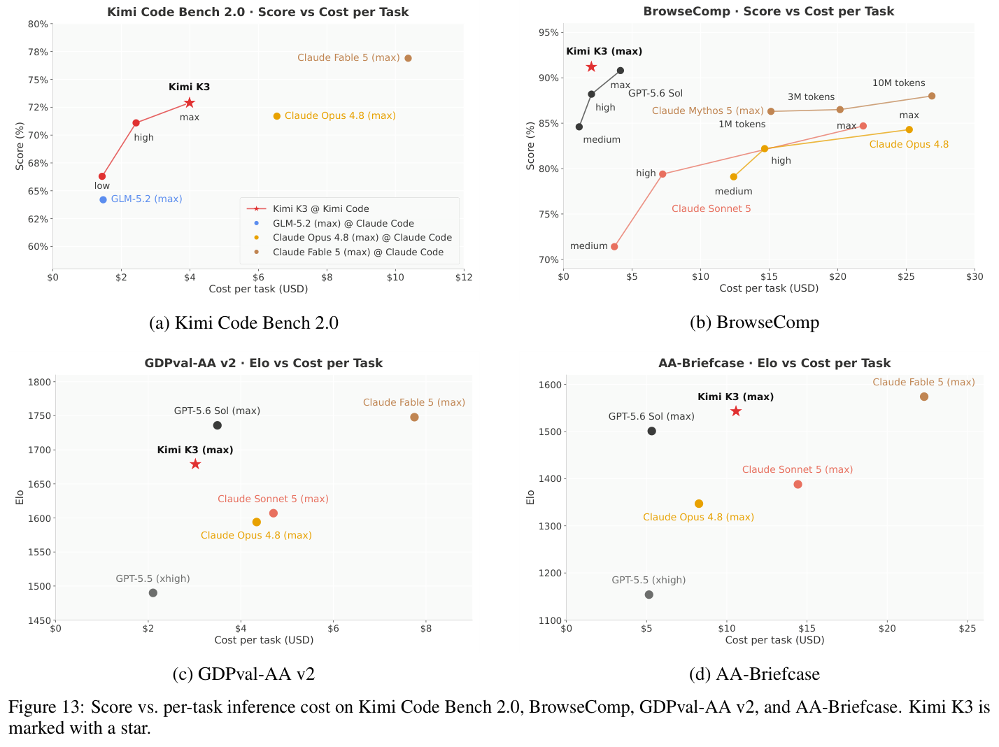
总体上，Kimi K3 在四个套件中均处于或接近成本效率前沿，尤其是以 Claude Fable 5 的一小部分成本，提供接近最高水平的分数。
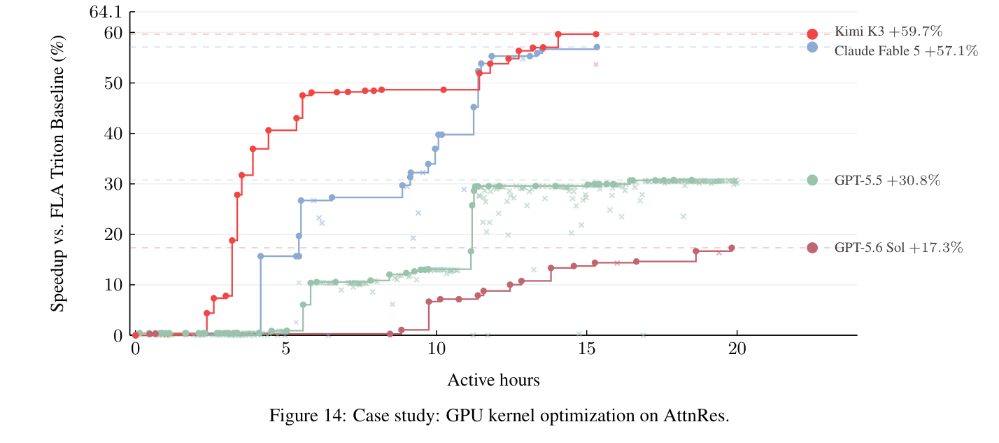
本节展示代表性案例，说明 Kimi K3 在多种技术任务上的能力。
GPU 内核优化。我们测试模型优化 GPU 内核的能力。各模型在配置相同的沙箱中独立工作，每个任务最多有 24 小时预算，用于性能分析、改写和基准测试。评估覆盖四个代表性内核：AttnRes、DeepSeek Sparse Attention（DSA）、KDA，以及头维度为 512 的 MLA；硬件为 NVIDIA Hopper GPU 和另一厂商的 GPGPU。Kimi K3 显著提高了四个内核的性能，将 AttnRes 延迟从 283.6 ms 降到 114.4 ms，DSA 和 KDA 运行时间分别缩短 55.1% 和 73.6%，MLA 达到超过峰值 TFLOPS 一半的性能。在这些任务上，Kimi K3 与 Claude Fable 5 [16]（发生回退）相当，并显著优于 Claude Opus 4.8 [17]、GPT-5.6 Sol [40] 和 GPT-5.5 [39]。图 14 比较各模型在 AttnRes 上的优化轨迹。在该基准之外，Kimi K3 的一个早期 checkpoint 已在开发后期承担我们大部分内核优化工作。
GPU 编译器开发。Kimi K3 开发了 MiniTriton5，一个紧凑的类 Triton [124] 编译器，具有自定义小块级 Python 前端与布局系统、轻量 warp 级 MLIR [65] 标注及优化层，以及 Parallel Thread Execution（PTX）代码生成流水线。围绕编译器构建的是一个双模式张量库，提供类 PyTorch [90] 高层接口，其即时执行路径和仅前向编译路径共享同一 DSL 编译器与运行时。该库进一步提供反向模式自动求导、神经网络模块、基于 NCCL [83] 的分布式训练原语，以及稀疏与可视化原语。在 NVIDIA L20 上，MiniTriton 在核心基准套件的几何平均值上优于 PyTorch eager [90] 和 torch.compile [5]。其从零实现的 tensor-core 矩阵乘法路径在最大形状上接近 cuBLAS [22]，达到实测机器性能上限的约 90%；DSL 级 KDA [64] prefill 内核则明显优于匹配的 Triton 参考实现。MiniTriton 还端到端训练一个 GPT 模型，损失曲线紧密跟随 PyTorch 参考；相对 fp64 参考测量时，完整模型 gradient 与 torch autograd 的差异不超过 torch 自身的 fp32 舍入误差（\(10^{-4}\)）。这些结果共同表明，Kimi K3 能构建连贯的端到端编译器，从 DSL 前端和 IR pass，到 PTX 代码生成及 CUDA 运行时，而不只是孤立内核的集合（图 15）。
芯片设计。作为早期概念验证，Kimi K3 为一个采用同类架构的 nano 模型设计推理芯片原型：混合 KDA 和 NoPE-MLA attention、块大小为二的分块 AttnRes、包含一个共享专家的 sigmoid MoE 路由，采用分组 INT4 权重量化（组大小 128）。在一次使用 Kimi Code、持续 48 小时的自主运行中，Kimi K3 使用开源 EDA 工具和 Nangate45 标准单元库 [81] 构建、优化并验证芯片。在 4 mm² 解析面积预算内，设计在 100 MHz 下完成时序收敛，达到 RTL 仿真 decoding 吞吐量超过 8,700 token/s，集成 1.46M 标准单元、0.277 MiB SRAM 和带融合反量化的 INT4 MAC 阵列。RTL 代码已在 GitHub6 提供。
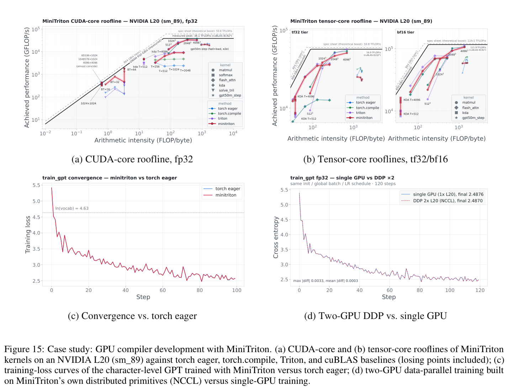
科研编码。为复现计算天体物理中的 I–Love–Q 普适关系，Kimi K3 阅读并交叉验证了 20 多篇论文的结果，实现完整数值流水线，评估 300 多个状态方程，发现已发表公式中的不一致，编写 3,000 多行 Python，并生成交互式 HTML 仪表板，耗时约两小时；经验丰富的研究人员通常需要一到两周。
知识工作。在 Kimi Work 中，Kimi K3 生成了一个覆盖 AI ASIC 行业 42 年历史的交互式研究网站。模型完成超过 120 轮迭代改进，通过超过 2,800 次 Web 搜索和 1,100 多次终端查询，使用包含 87 份季度报告和 99 份原始 PDF（超过 11,000 页）的语料。第二个案例中，Kimi K3 使用超过 20 个并发子 agent，分析 GWTC-5 中 391 个引力波事件，生成七幅科学可视化、两张汇总表，以及涵盖十多篇论文的文献综合。
视频编辑与动态设计。借助原生多模态架构，Kimi K3 为自身架构制作 3Blue1Brown 风格的动态图形讲解，并使用 56 个源片段剪辑预告视频。这涉及片段选择、运动匹配剪切、逐帧精确的节拍同步、音频处理和多轮修改。制作同等信息密度的短视频，经验丰富的剪辑师通常需要一到两天。
我们提出 Kimi K3，一款基于 Kimi Delta Attention 和 Attention Residuals、具有原生视觉能力和 100 万 token 上下文窗口的开放 2.8 万亿参数 MoE 模型。作为世界上首个开放的 3T 级模型，Kimi K3 在长程编码、agent、知识、推理和视觉任务上提供前沿水平性能。尽管与最强闭源模型之间仍存在差距，Kimi K3 确立了人人可及的新开放前沿。我们希望它能够支持更广泛的社区开展研究、部署和创新。
[1] τ³-Banking
τ 3-Banking. Sierra. 2026. URL: https://taubench.com/blog/tau-knowledge.html.
[2] AA-Briefcase：agent 知识工作基准
AA-Briefcase: Agentic Knowledge Work Benchmark. Artificial Analysis. 2026. URL: https://artificialanalysis.ai/evaluations/aa-briefcase.
[3] Firecracker：面向无服务器应用的轻量虚拟化
Alexandru Agache 等 “Firecracker: Lightweight Virtualization for Serverless Applications”. 载于： 17th USENIX Symposium on Networked Systems Design and Implementation (NSDI). 2020, 页码： 419–434.
[4] Agents’ Last Exam
Agents’ Last Exam. UC Berkeley RDI. 2026. URL: https://agents-last-exam.org/leaderboard.
[5] PyTorch 2：通过动态 Python 字节码变换与图编译加速机器学习
Jason Ansel 等 “PyTorch 2: Faster Machine Learning Through Dynamic Python Bytecode Transformation and Graph Compilation”. 载于： Proceedings of the 29th ACM International Conference on Architectural Support for Programming Languages and Operating Systems (ASPLOS). 2024. DOI: 10.1145/3620665.3640366. https://doi.org/10.1145/3620665.3640366
[6] Claude 的扩展思考
Anthropic. Claude’s Extended Thinking. https://www.anthropic.com/research/visible-extended-thinking. 访问日期： 2026-07-23. Feb. 2025.
[7] 介绍 Claude 4
Anthropic. Introducing Claude 4. https://www.anthropic.com/news/claude-4. 访问日期： 2026-07-23. May 2025.
[8] Artificial Analysis
Artificial Analysis. Artificial Analysis. 2026. URL: https://artificialanalysis.ai/.
[9] Artificial Analysis 长上下文推理（AA-LCR）
Artificial Analysis Long Context Reasoning (AA-LCR). Artificial Analysis. 2026. URL: https://artificialanalysis.ai/evaluations/artificial-analysis-long-context-reasoning.
[10] 通过联合学习对齐与翻译进行神经机器翻译
Dzmitry Bahdanau, Kyunghyun Cho, and Yoshua Bengio. Neural Machine Translation by Jointly Learning to Align and Translate. 2014. arXiv: 1409.0473 [cs.CL]. URL: https://arxiv.org/abs/1409.0473.
[11] MCP-Atlas：基于真实 MCP 服务器的工具使用能力大规模基准
Chaithanya Bandi 等 MCP-Atlas: A Large-Scale Benchmark for Tool-Use Competency with Real MCP Servers. 2026. arXiv: 2602.00933 [cs.SE]. https://arxiv.org/abs/2602.00933
[12] 使用 Warp Decode 改善 MoE 模型推理
Better MoE Model Inference with Warp Decode. Cursor. 2026. URL: https://cursor.com/blog/warp-decode (访问日期 07/20/2026).
[13] BabyVision：超越语言的视觉推理
Liang Chen 等 BabyVision: Visual Reasoning Beyond Language. 2026. arXiv: 2601.06521 [cs.CV]. URL: https://arxiv.org/abs/2601.06521.
[14] FlashKDA：Flash Kimi Delta Attention
Yutian Chen 等 FlashKDA: Flash Kimi Delta Attention. 2026. URL: https://github.com/MoonshotAI/FlashKDA.
[15] Claude Code
Claude Code. Anthropic. 2026. URL: https://docs.anthropic.com/en/docs/claude-code.
[16] Claude Fable 5
Claude Fable 5. Anthropic. 2026. URL: https://www.anthropic.com/news/claude-fable-5-mythos-5.
[17] Claude Opus 4.8
Claude Opus 4.8. Anthropic. 2026. URL: https://www.anthropic.com/news/claude-opus-4-8.
[18] Claude Sonnet 5
Claude Sonnet 5. Anthropic. 2026. URL: https://www-cdn.anthropic.com/283ef97c476cf442c91d9a37d5b214242a55bb92/Claude%20Sonnet%205%20System%20Card.pdf.
[19] Claude Sonnet 5
Claude Sonnet 5. Anthropic. 2026. URL: https://www.anthropic.com/news/claude-sonnet-5.
[20] Codex
Codex. OpenAI. 2026. URL: https://github.com/openai/codex.
[21] CorpFin v2
CorpFin v2. Vals AI. 2026. URL: https://www.vals.ai/benchmarks/corp_fin_v2.
[22] cuBLAS
cuBLAS. NVIDIA. 2026. URL: https://developer.nvidia.com/cublas.
[23] DeepSeekMoE：迈向 MoE 语言模型中的极致专家专门化
Damai Dai 等 DeepSeekMoE: Towards Ultimate Expert Specialization in Mixture-of-Experts Language Models. 2024. arXiv: 2401.06066 [cs.CL]. URL: https://arxiv.org/abs/2401.06066.
[24] Transformer 是 SSM：通过结构化状态空间对偶构建通用模型和高效算法
Tri Dao and Albert Gu. “Transformers are SSMs: Generalized Models and Efficient Algorithms Through Structured State Space Duality”. 载于： CoRR abs/2405.21060 (2024). DOI: 10.48550/ARXIV.2405.21060. arXiv: 2405.21060. URL: https://doi.org/10.48550/arXiv.2405.21060. https://doi.org/10.48550/ARXIV.2405.21060 https://arxiv.org/abs/2405.21060
[25] ReplaySSM：缓存 SSM 输入，而非状态
Dao AI Lab. ReplaySSM: Cache SSM Inputs, Not State. https://tridao.me/blog/2026/replayssm/. June 2026.
[26] 使用门控卷积网络进行语言建模
Yann N. Dauphin 等 “Language Modeling with Gated Convolutional Networks”. 载于： Proceedings of the 34th International Conference on Machine Learning. Vol. 70. Proceedings of Machine Learning Research. PMLR, 2017, 页码： 933–941. URL: https://proceedings.mlr.press/v70/dauphin17a.html.
[27] Griffin：混合门控线性递归与局部 attention，构建高效语言模型
Soham De 等 Griffin: Mixing Gated Linear Recurrences with Local Attention for Efficient Language Models. 2024. arXiv: 2402.19427 [cs.LG]. URL: https://arxiv.org/abs/2402.19427.
[28] DeepSeek-V2：强大、经济且高效的 MoE 语言模型
DeepSeek-AI. DeepSeek-V2: A Strong, Economical, and Efficient Mixture-of-Experts Language Model. 2024. arXiv: 2405.04434 [cs.CL]. URL: https://arxiv.org/abs/2405.04434.
[29] DeepSeek-V4：迈向高效的百万 token 上下文智能
DeepSeek-AI. “DeepSeek-V4: Towards Highly Efficient Million-Token Context Intelligence”. 载于： arXiv preprint arXiv:2606.19348 (2026).
[30] DeepSeek-V3 技术报告
DeepSeek-AI 等 DeepSeek-V3 Technical Report. 2024. arXiv: 2412.19437 [cs.CL]. URL: https://arxiv.org/abs/2412.19437.
[31] DeepSWE 基准
DeepSWE Benchmark. Datacurve. 2026. URL: https://deepswe.datacurve.ai/.
[32] LatentMoE：迈向 MoE 模型中每 FLOP 和每参数的最优准确率
Venmugil Elango 等 LatentMoE: Toward Optimal Accuracy per FLOP and Parameter in Mixture of Experts. 2026. arXiv: 2601.18089 [cs.LG]. URL: https://arxiv.org/abs/2601.18089.
[33] Switch Transformers：通过简单高效的稀疏性扩展到万亿参数模型
William Fedus, Barret Zoph, and Noam Shazeer. “Switch Transformers: Scaling to Trillion Parameter Models with Simple and Efficient Sparsity”. 载于： Journal of Machine Learning Research 23.120 (2022), 页码： 1–39.
[34] Optimus：通过利用流水线气泡加速大规模多模态 LLM 训练
Weiqi Feng 等 “Optimus: Accelerating Large-Scale Multi-Modal LLM Training by Bubble Exploitation”. 载于： 2025 USENIX Annual Technical Conference (USENIX ATC 25). Boston, MA: USENIX Association, July 2025, 页码： 161–177. ISBN: 978-1-939133-48-9. URL: https://www.usenix.org/conference/atc25/presentation/feng.
[35] Finance Agent v2
Finance Agent v2. Vals AI. 2026. URL: https://www.vals.ai/benchmarks/fabv2.
[36] FrontierSWE
FrontierSWE. 2026. URL: https://www.frontierswe.com/.
[37] Video-MME：首个全面评估多模态 LLM 视频分析能力的基准
Chaoyou Fu 等 Video-MME: The First-Ever Comprehensive Evaluation Benchmark of Multi-modal LLMs in Video Analysis. 2024. arXiv: 2405.21075 [cs.CV]. URL: https://arxiv.org/abs/2405.21075.
[38] GLM-5.2
GLM-5.2. Z.ai. 2026. URL: https://z.ai/blog/glm-5.2.
[39] GPT-5.5
GPT-5.5. OpenAI. 2026. URL: https://openai.com/index/introducing-gpt-5-5/.
[40] GPT-5.6 Sol
GPT-5.6 Sol. OpenAI. 2026. URL: https://openai.com/index/previewing-gpt-5-6-sol/.
[41] DeepSeek-R1 通过强化学习激励 LLM 推理
Daya Guo 等 “DeepSeek-R1 incentivizes reasoning in LLMs through reinforcement learning”. 载于： Nature 645.8081 (2025), 页码： 633–638. ISSN: 1476-4687. DOI: 10.1038/s41586- 025- 09422- z. URL: http://dx.doi.org/10.1038/s41586-025-09422-z. https://doi.org/10.1038/s41586-025-09422-z
[42] SonicMoE：通过 I/O 与小块感知优化加速 MoE
Wentao Guo 等 SonicMoE: Accelerating MoE with IO and Tile-aware Optimizations. 2025. arXiv: 2512. 14080 [cs.LG]. URL: https://arxiv.org/abs/2512.14080.
[43] Harvey LAB：法律 agent 基准
Harvey LAB: Legal Agent Benchmark. Harvey. 2026. URL: https://www.harvey.ai/blog/introducing-harveys-legal-agent-benchmark.
[44] 用于图像识别的深度残差学习
Kaiming He 等 Deep Residual Learning for Image Recognition. 2015. arXiv: 1512.03385 [cs.CV]. URL: https://arxiv.org/abs/1512.03385.
[45] Hermes Agent
Hermes Agent. Nous Research. 2026. URL: https://hermes-agent.nousresearch.com/docs/.
[46] 训练计算最优的 LLM
Jordan Hoffmann 等 Training Compute-Optimal Large Language Models. 2022. arXiv: 2203.15556 [cs.CL]. URL: https://arxiv.org/abs/2203.15556.
[47] MiniCPM：通过可扩展训练策略揭示小语言模型的潜力
Shengding Hu, Yuge Tu, Xu Han, 等 “MiniCPM: Unveiling the Potential of Small Language Models with Scalable Training Strategies”. 载于： (2024). arXiv: 2404.06395 [cs.CL]. https://arxiv.org/abs/2404.06395
[48] Step 3.5 Flash：以 11B 激活参数实现开放的前沿水平智能
Ailin Huang, Ang Li, Aobo Kong, 等 “Step 3.5 Flash: Open Frontier-Level Intelligence with 11B Active Parameters”. 载于： arXiv preprint arXiv:2602.10604 (2026).
[49] GPipe：使用 PP 高效训练巨型神经网络
Yanping Huang 等 “Gpipe: Efficient training of giant neural networks using pipeline parallelism”. 载于： Advances in neural information processing systems 32 (2019).
[50] 为高效纯整数算术推理进行神经网络量化与训练
Benoit Jacob 等 “Quantization and Training of Neural Networks for Efficient Integer-Arithmetic-Only Inference”. 载于： Proceedings of the IEEE Conference on Computer Vision and Pattern Recognition (CVPR). 2018, 页码： 2704–2713.
[51] DeepSpeed Ulysses：支持超长序列 Transformer 模型训练的系统优化
Sam Ade Jacobs 等 DeepSpeed Ulysses: System Optimizations for Enabling Training of Extreme Long Sequence Transformer Models. 2023. arXiv: 2309.14509 [cs.LG]. URL: https://arxiv.org/abs/2309.14509.
[52] PowLU：用于 LLM 稳定预训练的激活函数
Peijie Jiang 等 PowLU: An Activation Function for Stable Pre-Training of LLMs. 2026. arXiv: 2605.25704 [cs.CL]. URL: https://arxiv.org/abs/2605.25704.
[53] JobBench：使 agent 工作与人类意愿对齐
JobBench: Aligning Agent Work with Human Will. July 24, 2026. URL: https://job-bench.github.io/.
[54] Muon：用于神经网络隐藏层的优化器
Keller Jordan 等 Muon: An Optimizer for Hidden Layers in Neural Networks. 2024. URL: https://kellerjordan.github.io/posts/muon/.
[55] 神经语言模型的 scaling laws
Jared Kaplan 等 Scaling Laws for Neural Language Models. 2020. arXiv: 2001.08361 [cs.LG]. URL: https://arxiv.org/abs/2001.08361.
[56] Transformer 是 RNN：使用线性 attention 实现快速自回归 Transformer
Angelos Katharopoulos 等 “Transformers are RNNs: Fast Autoregressive Transformers with Linear Atten- tion”. 载于： Proceedings of ICML. Ed. by Hal Daumé III and Aarti Singh. PMLR, 2020, 页码： 5156–5165. URL: https://proceedings.mlr.press/v119/katharopoulos20a.html.
[57] Kimi CLI
Kimi CLI. Moonshot AI. 2026. URL: https://www.kimi.com/code.
[58] Attention Residuals（attention 残差）
Kimi Team. Attention Residuals. 预印本。 2026.
[59] Kimi K2：开放的 agent 智能
Kimi Team. Kimi K2: Open Agentic Intelligence. 2025. arXiv: 2507.20534 [cs.LG]. https://arxiv.org/abs/2507.20534
[60] Kimi K2.5：视觉 agent 智能
Kimi Team. “Kimi K2.5: Visual Agentic Intelligence”. 载于： arXiv preprint arXiv:2602.02276 (2026).
[61] Kimi K3：开放的前沿智能
Kimi Team. Kimi K3: Open Frontier Intelligence. Moonshot AI. July 16, 2026. URL: https://www.kimi.com/blog/kimi-k3.
[62] Kimi-VL 技术报告
Kimi Team. “Kimi-vl technical report”. 载于： arXiv preprint arXiv:2504.07491 (2025).
[63] PerceptionBench：评估多模态 LLM 中的原子视觉感知
Kimi Team. PerceptionBench: Evaluating Atomic Visual Perception in Multimodal Large Language Models. 2026. arXiv: 2607.24957 [cs.CV]. URL: https://arxiv.org/abs/2607.24957.
[64] Kimi Linear：表达力强且高效的 attention 架构
Kimi Team 等 Kimi Linear: An Expressive, Efficient Attention Architecture. 2025. arXiv: 2510.26692 [cs.CL]. https://arxiv.org/abs/2510.26692
[65] MLIR：扩展面向领域特定计算的编译器基础设施
Chris Lattner 等 “MLIR: Scaling Compiler Infrastructure for Domain Specific Computation”. 载于： 2021 IEEE/ACM International Symposium on Code Generation and Optimization (CGO). 2021, 页码： 2–14. DOI: 10.1109/CGO51591.2021.9370308. https://doi.org/10.1109/CGO51591.2021.9370308
[66] Legal Research Bench
Legal Research Bench. Vals AI. 2026. URL: https://www.vals.ai/benchmarks/legal_research.
[67] GShard：通过条件计算与自动分片扩展巨型模型
Dmitry Lepikhin 等 “Gshard: Scaling giant models with conditional computation and automatic sharding”. 载于： arXiv preprint arXiv:2006.16668 (2020).
[68] BASE Layers：简化大型稀疏模型的训练
Mike Lewis 等 “BASE Layers: Simplifying Training of Large, Sparse Models”. 载于： Proceedings of ICML. 2021.
[69] DADI：用于敏捷、弹性应用部署的块级镜像服务
Huiba Li 等 “DADI: Block-Level Image Service for Agile and Elastic Application Deployment”. 载于： 2020 USENIX Annual Technical Conference (USENIX ATC). 2020, 页码： 727–740.
[70] The Tool Decathlon：评估语言 agent 执行多样、真实、长程任务的能力
Junlong Li 等 The Tool Decathlon: Benchmarking Language Agents for Diverse, Realistic, and Long-Horizon Task Execution. ICLR 2026. 2025. arXiv: 2510.25726 [cs.CL]. https://arxiv.org/abs/2510.25726
[71] JobBench：使 agent 工作与人类意愿对齐
Yuetai Li 等 “JobBench: Aligning Agent Work With Human Will”. 载于： (2026). arXiv: 2605.26329 [cs.AI]. https://arxiv.org/abs/2605.26329
[72] EAGLE-3：通过训练时测试扩展 LLM 推理加速
Yuhui Li 等 EAGLE-3: Scaling up Inference Acceleration of Large Language Models via Training-Time Test. 2025. arXiv: 2503.01840 [cs.CL]. URL: https://arxiv.org/abs/2503.01840.
[73] 使用分块 Transformer 的 Ring Attention，实现近乎无限的上下文
Hao Liu, Matei Zaharia, and Pieter Abbeel. “Ring Attention with Blockwise Transformers for Near-Infinite Context”. 载于： (2023). arXiv: 2310.01889 [cs.CL]. URL: https://arxiv.org/abs/2310.01889.
[74] Muon 可扩展用于 LLM 训练
Jingyuan Liu 等 Muon is Scalable for LLM Training. 2025. arXiv: 2502.16982 [cs.LG]. URL: https://arxiv.org/abs/2502.16982.
[75] LMArena 排行榜
LMArena Leaderboard. LMArena. 2026. URL: https://lmarena.ai/leaderboard.
[76] OPD
Kevin Lu and Thinking Machines Lab. On-policy distillation. Thinking Machines Lab: Connectionism. 2025. URL: https://thinkingmachines.ai/blog/on-policy-distillation/.
[77] MLS-Bench：全面、严格评估 AI 系统构建更优 AI 的能力
Bohan Lyu 等 “MLS-Bench: A Holistic and Rigorous Assessment of AI Systems on Building Better AI”. 载于： (2026). arXiv: 2605.08678 [cs.LG]. https://arxiv.org/abs/2605.08678
[78] 沿序列长度并行化线性递归神经网络
Eric Martin and Chris Cundy. “Parallelizing Linear Recurrent Neural Nets Over Sequence Length”. 载于： Pro- ceedings of ICLR. 2018. URL: https://openreview.net/forum?id=HyUNwulC-.
[79] Terminal-Bench：评估 agent 在命令行界面中完成困难、真实任务的能力
Mike A Merrill 等 “Terminal-Bench: Benchmarking Agents on Hard, Realistic Tasks in Command Line Interfaces”. 载于： arXiv preprint arXiv:2601.11868 (2026).
[80] softmax 的在线归一化因子计算
Maxim Milakov and Natalia Gimelshein. Online normalizer calculation for softmax. 2018. arXiv: 1805.02867 [cs.PF]. URL: https://arxiv.org/abs/1805.02867.
[81] Nangate 45nm 开放标准单元库
Nangate, Inc. Nangate 45nm Open Cell Library. https://si2.org/open-cell-library/. Version PDKv1_3_v2010_12. Donated to and distributed by the Silicon Integration Initiative (Si2). 2010. (Visited on 07/27/2026).
[82] 使用 Megatron-LM 在 GPU 集群上高效训练大规模语言模型
Deepak Narayanan 等 “Efficient large-scale language model training on gpu clusters using megatron-lm”. 载于： Proceedings of the international conference for high performance computing, networking, storage and analysis. 2021, 页码： 1–15.
[83] NCCL：NVIDIA 集合通信库
NCCL: The NVIDIA Collective Communications Library. NVIDIA. 2026. URL: https://developer.nvidia.com/nccl.
[84] 介绍 OpenAI o3 和 o4-mini
OpenAI. Introducing OpenAI o3 and o4-mini. Apr. 2025. URL: https://openai.com/index/introducing-o3-and-o4-mini/.
[85] 使用 LLM 学习推理
OpenAI. Learning to Reason with LLMs. https://openai.com/index/learning-to-reason-with-llms/. 访问日期： 2026-07-23. 2024.
[86] OpenAI Harmony 响应格式
OpenAI Harmony Response Format. OpenAI. 2025. URL: https://github.com/openai/harmony.
[87] OpenClaw
OpenClaw. OpenClaw. 2026. URL: https://docs.openclaw.ai/.
[88] OfficeQA Pro：端到端有依据推理的企业基准
Krista Opsahl-Ong 等 “OfficeQA Pro: An Enterprise Benchmark for End-to-End Grounded Reasoning”. 载于： (2026). arXiv: 2603.08655. https://arxiv.org/abs/2603.08655
[89] OmniDocBench：以全面标注评估多样 PDF 文档解析
Linke Ouyang 等 OmniDocBench: Benchmarking Diverse PDF Document Parsing with Comprehensive Annotations. 2025. arXiv: 2412.07626 [cs.CV]. URL: https://arxiv.org/abs/2412.07626.
[90] PyTorch：命令式、高性能深度学习库
Adam Paszke 等 PyTorch: An Imperative Style, High-Performance Deep Learning Library. 2019. arXiv: 1912.01703 [cs.LG]. https://arxiv.org/abs/1912.01703
[91] GDPval：评估 AI 模型在真实且具有经济价值的任务上的表现
Tejal Patwardhan 等 GDPval: Evaluating AI Model Performance on Real-World Economically Valuable Tasks. 2025. arXiv: 2510.04374 [cs.LG]. URL: https://arxiv.org/abs/2510.04374.
[92] RWKV-7 “Goose”：具有强表达力的动态状态演化
Bo Peng 等 RWKV-7 "Goose" with Expressive Dynamic State Evolution. 2025. arXiv: 2503.14456 [cs.CL]. https://arxiv.org/abs/2503.14456
[93] YaRN：高效扩展 LLM 上下文窗口
Bowen Peng 等 “Yarn: Efficient context window extension of large language models”. 载于： arXiv preprint arXiv:2309.00071 (2023).
[94] Humanity’s Last Exam
Long Phan 等 Humanity’s Last Exam. 2025. arXiv: 2501.14249 [cs.LG]. URL: https://arxiv.org/abs/2501.14249.
[95] PostTrainBench
PostTrainBench. 2026. URL: https://posttrainbench.com/.
[96] ProgramBench
ProgramBench. Vals AI. 2026. URL: https://www.vals.ai/benchmarks/programbench.
[97] Mooncake：以 KVCache 为中心的 LLM 服务解耦架构
Ruoyu Qin 等 Mooncake: A KVCache-centric Disaggregated Architecture for LLM Serving. 2024. arXiv: 2407.00079 [cs.DC]. https://arxiv.org/abs/2407.00079
[98] HGRN2：具有状态扩展的门控线性 RNN
Zhen Qin 等 HGRN2: Gated Linear RNNs with State Expansion. 2024. arXiv: 2404.07904 [cs.CL]. URL: https://arxiv.org/abs/2404.07904.
[99] 低精度 Transformer 训练为何失败：对 Flash Attention 的分析
Haiquan Qiu and Quanming Yao. “Why Low-Precision Transformer Training Fails: An Analysis on Flash Attention”. 载于： International Conference on Learning Representations (ICLR). 2026. arXiv: 2510.04212 [cs.LG]. https://arxiv.org/abs/2510.04212
[100] LLM 的 gated attention：非线性、稀疏性和无 attention sink
Zihan Qiu 等 Gated Attention for Large Language Models: Non-linearity, Sparsity, and Attention-Sink-Free. 2025. arXiv: 2505.06708 [cs.CL]. https://arxiv.org/abs/2505.06708
[101] ZeRO：面向万亿参数模型训练的内存优化
Samyam Rajbhandari 等 “Zero: Memory optimizations toward training trillion parameter models”. 载于： SC20: International Conference for High Performance Computing, Networking, Storage and Analysis. IEEE. 2020, 页码： 1–16.
[102] GPQA：研究生级、无法靠 Google 搜索作答的问答基准
David Rein 等 “Gpqa: A graduate-level google-proof q&a benchmark”. 载于： First Conference on Language Modeling. 2024.
[103] ZeroBench：当代大型多模态模型无法完成的视觉基准
Jonathan Roberts 等 ZeroBench: An Impossible Visual Benchmark for Contemporary Large Multimodal Models. 2025. arXiv: 2502.09696 [cs.CV]. URL: https://arxiv.org/abs/2502.09696.
[104] 面向深度学习的微缩放数据格式
Bita Darvish Rouhani 等 “Microscaling Data Formats for Deep Learning”. 载于： arXiv preprint arXiv:2310.10537 (2023). arXiv: 2310.10537 [cs.LG]. https://arxiv.org/abs/2310.10537
[105] LK 损失：直接优化 speculative decoding 的接受率
Alexander Samarin 等 LK Losses: Direct Acceptance Rate Optimization for Speculative Decoding. 2026. arXiv: 2602.23881 [cs.LG]. URL: https://arxiv.org/abs/2602.23881.
[106] 线性 Transformer 实质上是快速权重编程器
Imanol Schlag, Kazuki Irie, and Jürgen Schmidhuber. “Linear Transformers Are Secretly Fast Weight Program- mers”. 载于： Proceedings of ICML. Ed. by Marina Meila and Tong Zhang. PMLR, 2021, 页码： 9355–9366. URL: https://proceedings.mlr.press/v139/schlag21a.html.
[107] ResearchRubrics：用于评估深度研究 agent 的提示与评分标准基准
Manasi Sharma 等 “ResearchRubrics: A Benchmark of Prompts and Rubrics For Evaluating Deep Research Agents”. 载于： The Fourteenth International Conference on Learning Representations. 2026. URL: https://openreview.net/forum?id=ErnvfmSX0P.
[108] GLU 变体改善 Transformer
Noam Shazeer. GLU Variants Improve Transformer. 2020. arXiv: 2002. 05202 [cs.LG]. URL: https://arxiv.org/abs/2002.05202.
[109] AutomationBench
Daniel Shepard and Robin Salimans. “AutomationBench”. 载于： (2026). arXiv: 2604.18934 [cs.AI]. https://arxiv.org/abs/2604.18934
[110] SaaS-Bench：计算机操作 agent 能否利用真实 SaaS 完成专业工作流？
Kean Shi 等 SaaS-Bench: Can Computer-Use Agents Leverage Real-World SaaS to Solve Professional Workflows? 2026. arXiv: 2605.15777 [cs.AI]. URL: https://arxiv.org/abs/2605.15777.
[111] ThunderKittens：简单、快速且可爱的内核
Benjamin F. Spector 等 “ThunderKittens: Simple, Fast, and Adorable Kernels”. 载于： The Thirteenth Inter- national Conference on Learning Representations. 2025. URL: https://openreview.net/forum?id=0fJfVOSUra.
[112] Muon 优化器指南：快速入门与关键细节
Jianlin Su. Muon Optimizer Guide: Quick Start and Key Details. 中文博客文章。 Nov. 2025. URL: https://kexue.fm/archives/11416.
[113] MoE 漫游：6. 通过最优分配促进负载均衡
Jianlin Su. Travels in MoE: 6. Promoting Load Balance via Optimal Assignment. 中文博客文章。 Feb. 2026. URL: https://spaces.ac.cn/archives/11619.
[114] 用于自回归语言建模的专家阈值路由：动态计算分配与负载均衡
Hanchi Sun 等 Expert Threshold Routing for Autoregressive Language Modeling with Dynamic Computation Allocation and Load Balancing. 2026. arXiv: 2603.11535 [cs.AI]. https://arxiv.org/abs/2603.11535
[115] LASP-2：重新思考线性 attention 及其混合形式的 SP
Weigao Sun 等 “LASP-2: Rethinking Sequence Parallelism for Linear Attention and Its Hybrid”. 载于： (2025). arXiv: 2502.07563 [cs.LG]. URL: https://arxiv.org/abs/2502.07563.
[116] 线性attentionSP
Weigao Sun 等 “Linear Attention Sequence Parallelism”. 载于： (2024). arXiv: 2404.02882 [cs.LG]. URL: https://arxiv.org/abs/2404.02882.
[117] Agents’ Last Exam
Yiyou Sun 等 Agents’ Last Exam. 2026. arXiv: 2606.05405 [cs.AI]. URL: https://arxiv.org/abs/2606.05405.
[118] 基于二元整数规划的 MoE 模型专家负载均衡算法
Yuan Sun. Binary-Integer-Programming Based Algorithm for Expert Load Balancing in Mixture-of-Experts Models. 2025. arXiv: 2502.15451 [cs.LG]. https://arxiv.org/abs/2502.15451
[119] SWE Marathon
SWE Marathon. 2026. URL: https://www.swe-marathon.org/.
[120] Kimi k1.5：使用 LLM 扩展强化学习
Kimi Team. Kimi k1.5: Scaling Reinforcement Learning with LLMs. 2025. arXiv: 2501.12599 [cs.AI]. URL: https://arxiv.org/abs/2501.12599.
[121] The Tool Decathlon：评估语言 agent 执行多样、真实、长程任务的能力
The Tool Decathlon: Benchmarking Language Agents for Diverse, Realistic, and Long-Horizon Task Execution. July 24, 2026. URL: https://toolathlon.xyz/introduction.
[122] Inkling：我们的开放权重模型
Thinking Machines Lab. Inkling: Our Open-Weights Model. https://thinkingmachines.ai/news/introducing-inkling/. 访问日期： 2026-07-23. July 2026.
[123] SciCode：由科学家筛选的科研编码基准
Minyang Tian 等 SciCode: A Research Coding Benchmark Curated by Scientists. 2024. arXiv: 2407.13168 [cs.AI]. URL: https://arxiv.org/abs/2407.13168.
[124] Triton：用于分块神经网络计算的中间语言与编译器
Philippe Tillet, Hsiang-Tsung Kung, and David Cox. “Triton: An Intermediate Language and Compiler for Tiled Neural Network Computations”. 载于： Proceedings of the 3rd ACM SIGPLAN International Workshop on Machine Learning and Programming Languages (MAPL). 2019.
[125] 对 Kimi K3 网络安全能力的初步评估
UK AI Security Institute and U.S. Center for AI Standards and Innovation. Preliminary Assessment of Kimi K3’s Cyber Capabilities. https://www.aisi.gov.uk/blog/preliminary-assessment-of-kimi-k3s-cyber-capabilities. July 2026.
[126] Vals AI
Vals AI. Vals AI. 2026. URL: https://www.vals.ai/.
[127] Attention Is All You Need（你所需要的就是 attention）
Ashish Vaswani 等 “Attention is All you Need”. 载于： Advances in NeurIPS. Ed. by I. Guyon 等 Curran Associates, Inc., 2017. URL: https://proceedings.neurips.cc/paper_files/paper/2017/file/3f5ee243547dee91fbd053c1c4a845aa-Paper.pdf.
[128] DeepSearchQA：弥合深度研究 agent 的全面性差距
Nikhita Vedula 等 DeepSearchQA: Bridging the Comprehensiveness Gap for Deep Research Agents. 2025. URL: https://storage.googleapis.com/deepmind-media/DeepSearchQA/DeepSearchQA_benchmark_paper.pdf.
[129] APEX-Agents
Bertie Vidgen 等 APEX-Agents. 2026. arXiv: 2601.14242 [cs.CL]. https://arxiv.org/abs/2601.14242
[130] 使用 MATH-Vision 数据集衡量多模态数学推理
Ke Wang 等 “Measuring Multimodal Mathematical Reasoning with MATH-Vision Dataset”. 载于： Advances in NeurIPS. Ed. by A. Globerson 等 Vol. 37. Curran Associates, Inc., 2024, 页码： 95095–95169. DOI: 10. 52202/079017-3014. URL: https://proceedings.neurips.cc/paper_files/paper/2024/file/ad0edc7d5fa1a783f063646968b7315b-Paper-Datasets_and_Benchmarks_Track.pdf. https://doi.org/10.52202/079017-3014
[131] TileLang：面向 AI 系统的可组合分块编程模型
Lei Wang 等 “TileLang: A Composable Tiled Programming Model for AI Systems”. 载于： arXiv preprint arXiv:2504.17577 (2025). URL: https://arxiv.org/abs/2504.17577.
[132] CharXiv：揭示多模态 LLM 在真实图表理解中的差距
Zirui Wang 等 CharXiv: Charting Gaps in Realistic Chart Understanding in Multimodal LLMs. 2024. arXiv: 2406.18521 [cs.CL]. URL: https://arxiv.org/abs/2406.18521.
[133] BrowseComp：浏览 agent 的简单但具有挑战性的基准
Jason Wei 等 BrowseComp: A Simple Yet Challenging Benchmark for Browsing Agents. 2025. arXiv: 2504.12516 [cs.CL]. URL: https://arxiv.org/abs/2504.12516.
[134] UltraEP：通过接近最优的负载均衡，在机架级节点上释放 MoE 训练与推理能力
Xinming Wei 等 UltraEP: Unleash MoE Training and Inference on Rack-Scale Nodes with Near-Optimal Load Balancing. 2026. arXiv: 2606.04101 [cs.DC]. URL: https://arxiv.org/abs/2606.04101.
[135] MCPMark：用于对真实、全面的 MCP 使用进行压力测试的基准
Zijian Wu 等 “MCPMark: A benchmark for stress-testing realistic and comprehensive mcp use”. 载于： arXiv preprint arXiv:2509.24002 (2025).
[136] MiMo-V2-Flash 技术报告
B. Xiao 等 “MiMo-V2-Flash Technical Report”. 载于： arXiv preprint arXiv:2601.02780 (2026).
[137] MiMo-V2.5-Pro
Xiaomi MiMo Team. MiMo-V2.5-Pro. https://huggingface.co/collections/XiaomiMiMo/mimo-v25. 2026.
[138] 介绍 OSWorld-Verified
Tianbao Xie 等 “Introducing OSWorld-Verified”. 载于： xlang.ai (July 2025). URL: https://xlang.ai/blog/osworld-verified.
[139] 使用 Megatron Core 可扩展地训练 MoE 模型
Zijie Yan 等 Scalable Training of Mixture-of-Experts Models with Megatron Core. 2026. arXiv: 2603.07685 [cs.DC]. URL: https://arxiv.org/abs/2603.07685.
[140] Gated Delta Networks：使用 Delta Rule 改善 Mamba2
Songlin Yang, Jan Kautz, and Ali Hatamizadeh. “Gated Delta Networks: Improving Mamba2 with Delta Rule”. 载于： Proceedings of ICLR. 2025. URL: https://openreview.net/forum?id=r8H7xhYPwz.
[141] FLA：基于 Triton、用于硬件高效实现线性 attention 机制的库
Songlin Yang and Yu Zhang. FLA: A Triton-Based Library for Hardware-Efficient Implementations of Linear Attention Mechanism. Jan. 2024. URL: https://github.com/fla-org/flash-linear-attention.
[142] 具有硬件高效训练的门控线性 attention Transformer
Songlin Yang 等 “Gated Linear Attention Transformers with Hardware-Efficient Training”. 载于： Proceedings of ICML. PMLR, 2024.
[143] 沿序列长度使用 Delta Rule 并行化线性 Transformer
Songlin Yang 等 “Parallelizing Linear Transformers with the Delta Rule over Sequence Length”. 载于： Proceedings of NeurIPS. 2024.
[144] DeltaNet 的 CP
Yaoyu Wang. Context Parallelism for DeltaNet. 2025. URL: https://yywangcs.notion.site/DeltaNet-2a9fc9f5d8058013a498f34e0b25bd52.
[145] OSWorld2.0：评估计算机操作 agent 执行长程真实任务的能力
Mengqi Yuan 等 OSWorld2.0: Benchmarking Computer Use Agents on Long-Horizon Real-World Tasks. 2026. arXiv: 2606.29537 [cs.AI]. URL: https://arxiv.org/abs/2606.29537.
[146] MMMU-Pro：更稳健的多学科多模态理解基准
Xiang Yue 等 MMMU-Pro: A More Robust Multi-discipline Multimodal Understanding Benchmark. 2024. arXiv: 2409.02813 [cs.CL]. URL: https://arxiv.org/abs/2409.02813.
[147] GLM-5：从 Vibe Coding 到 agent 工程
Aohan Zeng 等 GLM-5: from Vibe Coding to Agentic Engineering. 2026. arXiv: 2602.15763 [cs.LG]. URL: https://arxiv.org/abs/2602.15763.
[148] 均方根层归一化
Biao Zhang and Rico Sennrich. “Root mean square layer normalization”. 载于： Advances in NeurIPS 32 (2019).
[149] DeepEP：高效的 EP 通信库
Chenggang Zhao 等 DeepEP: an efficient expert-parallel communication library. https://github.com/deepseek-ai/DeepEP. 2025.
[150] MMVU：衡量专家级多学科视频理解
Yilun Zhao 等 “MMVU: Measuring Expert-Level Multi-Discipline Video Understanding”. 载于： Proceedings of the IEEE/CVF Conference on Computer Vision and Pattern Recognition (CVPR). June 2025, 页码： 8475–8489.
[151] WorldVQA：衡量多模态 LLM 中的原子世界知识
Runjie Zhou 等 WorldVQA: Measuring Atomic World Knowledge in Multimodal Large Language Models. 2026. arXiv: 2602.02537 [cs.CV]. URL: https://arxiv.org/abs/2602.02537.
[152] SpreadsheetBench 2：评估 agent 完成端到端商业电子表格工作流的能力
Jian Zhu 等 “SpreadsheetBench 2: Evaluating Agents on End-to-End Business Spreadsheet Workflows”. 载于： (2026). arXiv: 2606.29955 [cs.SE]. https://arxiv.org/abs/2606.29955
贡献者按姓氏的字母顺序排列。
SiTU-GLU（§2.3.2）的设计目标是，在不丢弃 Swish 典型形状的前提下，使 SwiGLU 乘积有界：在原点附近近似线性，负尾部趋于消失。图 4 展示了门分支和升维分支及其完整标量响应。
对两个分支施加平滑上限。SiTU 将 Swish 的线性因子限制为 \(\beta _{1} tanh(W_{g}x/\beta _{1})\)，同时保留 sigmoid 因子 [61]。由于 sigmoid 已将负值门响应推向零，这一改动主要控制较大的正激活，而不移除负尾部。Kimi K3 将同一构造应用于升维分支，得到 \(\beta _{2} tanh(W_{u}x/\beta _{2})\)，防止任一分支支配乘积。
局部与极限行为。对于原点附近的标量 \(z\)，缩放 tanh 满足：
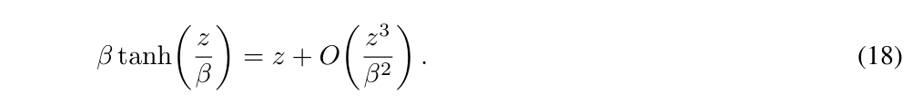
因此，SiTU-GLU 在原点附近一阶上与 SwiGLU 一致。当 \(\beta _{1}\)、\(\beta _{2} \to \infty\) 时，它还逐点恢复为 SwiGLU。
有界输出。由于 \(|tanh(z)| < 1\) 且 \(0 < Sigmoid(z) < 1\)，每个输出坐标满足：
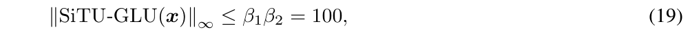
其中 \(\beta _{1} = 4\)，\(\beta _{2} = 25\)。与对门的预激活进行硬截断不同，平滑上限在远离饱和边界处保留非零 gradient，我们发现这带来更好的训练行为。
本附录遵循 [113]，从最优均衡分配推导 §2.3 所用的分位数均衡（QB）更新；从分配角度研究专家负载均衡可以追溯到 BASE Layers [68] 和 BIP [118]。令 \(s \in \mathbb{R} ^{m\times n}\) 汇集 \(m\) 个 token 对 \(n\) 个专家的路由分数，每个 token 恰好选择 \(k\) 个专家，\(x_{i,j} \in \{0, 1\}\) 表示 token \(i\) 是否分配给专家 \(j\)。每个专家恰好服务 mk/n 个 token（假设为整数）的最大分数均衡分配为：
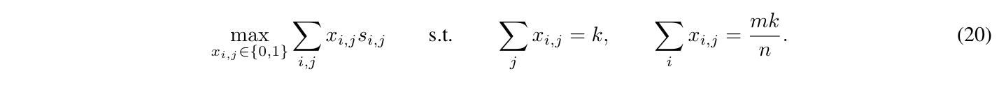
线性松弛与对偶。将 \(x_{i,j} \in \{0, 1\}\) 松弛为 \(x_{i,j} \in [0, 1]\)，使式 20 转化为线性规划；由于二分图 \(b\)-matching 多面体的标准整数性，其最优解为整数，因此松弛是精确的。分别为 token 侧与专家侧等式约束引入自由乘子 \(\alpha _{i}\) 和 \(\beta _{j}\)，松弛问题可以写为 max–min 形式：
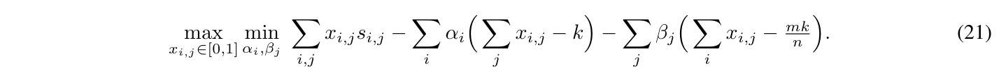
目标对 \(x\)、\(\alpha\) 和 \(\beta\) 分别都是线性的，可行集合为凸集，因此极小极大定理允许交换优化顺序：
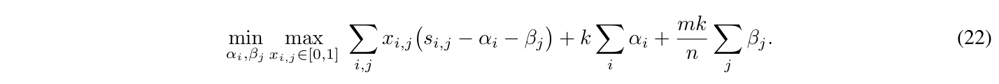
内层最大化可按条目分离：若 \(s_{i,j} - \alpha _{i} - \beta _{j} > 0\)，则 \(x*_{i,j} = 1\)；若小于 0，则 \(x*_{i,j} = 0\)。实践中，并列情形的测度为零。代入 x* 得到凸对偶目标：
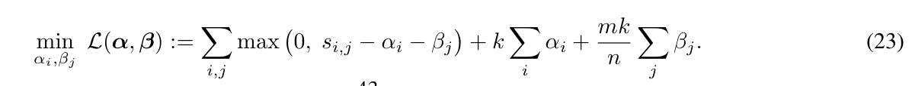
输入：分数矩阵 \(s \in \mathbb{R} ^{m\times n}\)；输出：分配 \(x \in \{0, 1\}^{m\times n}\)。原始伪代码如下：
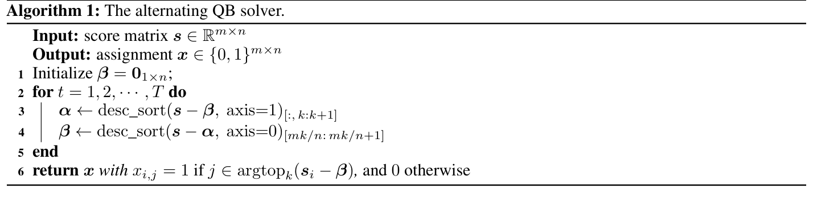
精确坐标最小化。我们交替在固定 \(\beta\) 时求解 \(\alpha\)、固定 \(\alpha\) 时求解 \(\beta\)，以最小化式 23；每个子问题都有闭式精确解。固定 \(\beta\) 后，问题在 token 之间解耦，对于 token \(i\)，我们求解：
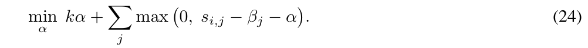
该目标是关于 \(\alpha\) 的分段线性函数，斜率为 \(k\) 减去超过 \(\alpha\) 的间隔值 \(s_{i,j} - \beta _{j}\) 的数量；因此，恰有 \(k\) 个间隔值位于 \(\alpha\) 上方时，它精确取得最小值，也就是 \(\alpha *_{i}\) 可以为 \(s_{i} - \beta\) 中第 \(k\) 大与第 \((k+1)\) 大条目之间的任意值。按约定，我们取第 \((k+1)\) 大条目，等价于 \((1-k/n)\) 分位数：
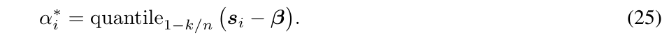
对称地，固定 \(\alpha\) 后，专家 \(j\) 求解 \(min_{\beta} (mk/n)\beta + \sum _{i} max(0, s_{i,j} - \alpha _{i} - \beta )\)，其最小化解为 \(s_{:,j} - \alpha\) 中第 \((mk/n+1)\) 大条目，同样是 \((1-k/n)\) 分位数：
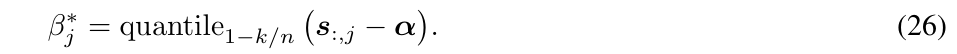
因此，两种更新分别沿 token 轴与专家轴取同一分位数，这正是该方法名称的来源。图 5 将专家侧更新展示为均衡每个专家间隔分布中被接受的上尾，算法 1 总结所得交替求解器。
从分配到路由。式 23 的最优点处，\(x*_{i,j} = 1\) 当且仅当 \(s_{i,j} - \alpha *_{i} - \beta *_{j} > 0\)；结合 token 约束 \(\sum _{j} x*_{i,j} = k\)，所选专家恰好是 \(s_{i} - \beta *\) 的 Top-k 条目。因此，路由只需要专家阈值 \(\beta \in \mathbb{R} ^{n}\)（等价于式 13 中的偏置 \(b = -\beta\)），token 阈值 \(\alpha \in \mathbb{R} ^{m}\) 则是关联动态训练 batch 的中间变量，随后丢弃。这种不对称保留训练与推理一致性：部署时，路由是在冻结偏置下固定选择 Top-k，无需计算分位数。
与基于符号的无损失更新的关系。式 26 背后的专家侧子问题具有如下（次）gradient：
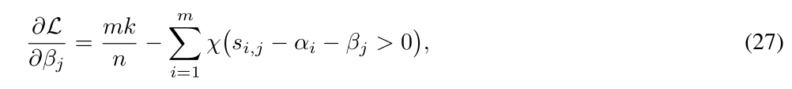
即目标负载减去专家 \(j\) 的观测负载。对此目标执行一步 SignSGD，可恢复无辅助损失均衡 [30] 的固定步长符号更新，只需考虑 \(b = -\beta\) 的符号约定：符号更新仅保留式 27 中负载误差的方向，QB 则直接跳到同一对偶目标的精确坐标最小化解。这一视角解释了 QB 为何不需要类似学习率的超参数，以及为何即使面对近 10³ 个专家，也能在少数更新步骤内达到均衡。QB 也与 BIP [118] 相关，后者以不等式约束 \(\sum _{j} x_{i,j} \le k\) 和 \(\sum _{i} x_{i,j} \le mk/n\) 求解同一分配；由此引入的 \(\alpha\) 和 \(\beta\) 非负约束，在两种更新中加入 max(0, ·) 截断，只能抑制过度选择的专家，而不能促进选择不足的专家，并在我们的实验中显著减慢达到均衡的速度。最后，所得固定 Top-k 路由与专家专属阈值路由相关，但不同于 Expert Threshold 路由：后者维护 EMA 阈值，允许每个 token 选择可变数量的专家 [114]。
式 14 的 QB 更新要求对整个训练步骤取分位数：对 \(n\) 个专家中的每个专家，计算间隔值 \(s_{i,j} - \alpha _{i}\) 的 \((1-k/n)\) 分位数，其中 token 数量 \(m\) 达到数百万，分片在 DP rank 和 gradient 累积步骤之间。
（后续说明接第 45 页。）
（接上页。）在训练循环内汇集 O(mn) 个间隔值来求精确分位数并不现实。关键观察是，更新从不需要间隔值本身，只需要逐专家分布，而直方图可用固定成本概括这种分布。因此，Kimi K3 为每个专家维护分箱直方图，从中读取分位数。具体而言，我们对所需偏置 \(r_{i,j} := \alpha _{i} - s_{i,j}\) 建立直方图，这一偏置恰好使专家 \(j\) 位于 token \(i\) 的截断值上；对间隔值取负会反转顺序，因此式 14 的 QB 目标 \(\hat{b}_{j}\) 恰好是 \(r_{:,j}\) 的 (k/n) 分位数。
分箱范围。首先要确定分箱覆盖的区间，而所需偏置对此有帮助：它的范围由当前偏置本身界定。路由分数为 sigmoid 输出，因此 \(s_{i,j} \in (0, 1)\)；截断值 \(\alpha _{i}\) 本身是某个专家 j′ 的偏置分数 \(s_{i,j'} + b_{j'}\)，因此位于 \((b_{min}, 1+b_{max})\) 中，\(b_{min}\) 和 \(b_{max}\) 是当前偏置的最小与最大值。所以每个 \(r_{i,j}\) 都落在 \([b_{min}-1, b_{max}+1]\) 内。我们将此区间划分为 \(B\) 个均匀分箱，实践中这已足够，并在每步重新计算范围，使分箱宽度 \(w = (b_{max}-b_{min}+2)/B\) 随偏置为纠正不均衡而扩散时保持自适应。
累积与恢复。其余流程遵循训练步骤结构。每次前向传播期间，每个 rank 将本地 \(r_{i,j}\) 值以 scatter-add 方式累加到逐专家计数矩阵 \(H \in \mathbb{N} ^{n\times B}\) 中，跨全部 micro-batch 累积而无需通信。在步骤末尾，一次 all-reduce 将本地计数求和为全局直方图，各 rank 从相同汇总计数中恢复分位数。每个专家的直方图对每个 token 计数一次，因此目标秩恰好是 §2.3.3 的目标负载 \(q = mk/n\)，但此时覆盖完整步骤：我们选择累积计数首次达到 \(\lceil q\rceil\) 的分箱，并在箱内进行线性插值。如果选中分箱 \(\beta _{j}\)，其前累积计数为 \(c_{j}\)，箱内计数为 \(h_{j}\)，则：
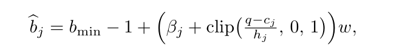
所得偏置按式 14 去均值中心化。
性质。三个性质使这一估计器在大规模下实用。首先，它准确：分箱边缘处的累积计数精确，真实分位数及其估计位于同一分箱内，误差受箱宽 \(w\) 限制；\(B = 1000\) 时，误差最多为几乘 \(10^{-3}\)，我们未观察到可测量的残余负载不均衡。其次，它便宜：唯一通信是每层每步对 nB 个值执行一次整数 all-reduce，与 \(m\) 无关；在我们的配置中，其成本低于自然替代方案，即每个 micro-batch 在进程组内交换原始间隔值成本的 1%。第三，它估计正确的量：因为计数可相加，全局直方图对 token 在各 rank 或累积步骤之间的划分严格不变，估计的是汇集后全局 batch 的分位数，而不是通常与其不同的逐 rank 分位数平均值。进一步的改进是在各步骤之间对估计分位数维护指数移动平均，可降低 batch 之间的采样噪声，进一步改善负载均衡。
令 \(m_{r}(P)\) 表示在方案 \(P\) 下放置于 rank r 的冗余专家数量。对于路由器输出 \(I\)，规划目标是最小化任意 rank 的最大冗余专家数，即 \(M(I) = min_{P} max_{r}\{m_{r}(P)\}\)。我们证明 \(M(I) \le E/R\) 始终成立（定理 1），且此界基本紧致：存在路由器输出，使 \(M = \lceil E(R-1)/R^{2}\rceil \approx E/R\)（定理 2）。
定理 1 的证明（一般上界）。目标是证明对于任意路由器输出 \(I\)，\(M(I) \le E/R\) 成立。关键引理：存在方案 \(P^{*}\)，使每个 EP rank 接收完全相同的 token 数量（\(S \times K\)），且每个 rank 的远端 token 仅来自另一个 EP rank。构造如下：初始时，每个 rank 仅持有本地 token，按负载分为欠载和过载两类。反复选取一个欠载 rank 和一个过载 rank，将过载 rank 的 token 迁移到欠载 rank，恰好将后者填充到均衡值 \(S \times K\)；过载 rank 可能仍过载、恰好均衡或变为欠载，并放回相应集合。重复直到全部 rank 完全均衡。每次填充使一个欠载 rank 均衡，之后不再改变，因此过程最多 \(R-1\) 次填充后终止；同时，每个 rank 最多被填充一次，其远端 token 因而来自单个 rank，引理得证。因此，假设 rank r 的全部远端 token 来自 rank s；这些 token 至多属于 rank s 的 E/R 个本地专家，所以 \(m_{r}(P^{*}) \le E/R\)，故：
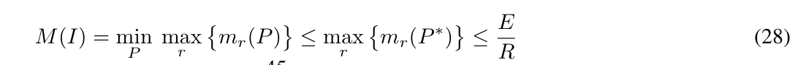
定理 2 的证明（上界的紧致性）。构造如下路由器输出 \(I^{*}\)：EP rank 0 的专家不接收任何 token，其他 \(R-1\) 个 rank 上的所有专家均匀分担全部 token。于是，全部 \(S \times K \times R\) 个 token 均匀分给 \(E(R-1)/R\) 个专家，每个专家接收 \(SKR^{2}/[E(R-1)]\) 个 token。在任何方案 \(P\) 下，rank 0 都必须接收 \(S \times K\) 个 token，全部来自远端，并涉及至少 \(SK \div (SKR^{2}/[E(R-1)]) = E(R-1)/R^{2}\) 个不同专家；向上取整后，rank 0 至少需要 \(\lceil E(R-1)/R^{2}\rceil\) 个冗余专家，因此 \(M(I^{*})\ge\lceil E(R-1)/R^{2}\rceil\)。
反过来，使用定理 1 证明中的填充过程构造方案，并优先按专家迁移 token，可以将每个 rank 的冗余专家数量保持在该值以内，因此等号成立。当 \(R\) 较大时，\(\lceil E(R-1)/R^{2}\rceil \approx E/R\)，因此定理 1 的上界基本紧致：不存在显著小于 E/R 的一般上界。
Kimi K3 聊天模板围绕三个目标重新设计。第一是可扩展性：新能力应通过向后兼容的消息格式引入，而非修改模板，使单一模板服务整个模型世代。第二是低对齐税：格式应能够用最少的监督数据学习，支持轻量微调的预训练模型直接进入强化学习的流水线。第三是 decoding 友好性：结构应支持简单编码器、流式解析器和语法约束执行器。为此，模板采用 XTML（eXtensible Token Markup Language），一种类 XML 标记，将尖括号语法替换为三个保留特殊 token：[open]、[sep] 和 [close]，另以 [end_of_msg] token 作为生成停止标记。元素 [open]tag attr="value"[sep] ... [close]tag[sep] 与其 XML 对应形式同构，但每个结构边界都是显式特殊 token，消除元素边界处的分词歧义，简化约束 decoding。
消息与区域。上下文的顶层单元是消息，按来源分为两类（图 16a）。输入消息序列化请求的 messages 字段，覆盖常见的 system、user、assistant 和 tool 角色。选项消息将请求选项转化为模型在上下文中读取的指令，其放置位置反映作用域。全局选项，即工具声明（type="tool-declare"）和推理投入设置，出现在全部输入消息之前：它们支配整个会话且很少变化，因此修改它们本就会使 KV cache 失效。单次选项（tool_choice、response_format）追加到输入消息之后，使逐请求变化保留历史 KV cache。第三种是输入选项消息，与输入消息交错，用于在会话中途补充或覆盖全局选项。
（动态工具加载说明接第 47 页。）
（接上页。）这种机制支持动态加载工具：在对话期间检索或加载的工具，通过额外的 tool-declare 消息声明；此后模型的可用工具集扩展，无需重建先前上下文。
通道。assistant 消息体组织为多个通道，这一概念受 OpenAI 的 Harmony 响应格式 [86] 启发：think 承载推理轨迹，response 承载用户可见答案，tools 承载工具调用（图 16b）。两种生成模式完全通过生成前缀选择：思考模式使用 [open]think[sep]，指令模式使用 [open]response[sep]，而非使用不同模板。Kimi K3 仅支持保留思考：思考模式下，think 通道始终保留在历史中，即使内容为空也保留，使模型跨轮次看到一致消息结构；指令模式下，历史消息仅包含 response 和 tools 通道。
工具调用。tools 通道内，每次调用带有 tool 和 index 属性；index 为消息内的并行调用编号，每个工具结果消息重复相同的 tool/index 对，并遵循其调用的顺序，使结果与调用明确关联。参数带有类型：字符串参数以原始文本出现，其他 JSON 类型的值以紧凑形式序列化。因此，代码等自由格式文本是一等公民，而非转义后的 JSON 字符串。纯 JSON 回退块覆盖参数无法分解为带类型 argument 块的输入；它仅出现在输入 token 中，从不出现在模型输出中，训练期间其损失被屏蔽。
推理投入与选项。推理投入作为类型为 thinking-effort 的全局选项消息暴露，插入在工具声明之后、输入消息之前。该消息不修改生成前缀，也不暴露 token 预算，而是以自然语言说明请求的等级，作为生成约束指令。模式预留四个等级（low、medium、high 和 max），Kimi K3 支持其中一个子集。这种表示将投入接口与模板语法解耦，直接与 §4.1.1 和 §4.1.2 中的投入条件训练对应。
更广泛地说，这是所有选项消息的共同实现：tool_choice、response_format 和 thinking-effort 均转化为放在上下文中的简短自然语言指令，而非专用特殊语法。由于预训练模型已经能很好地遵循这类指令，新选项可以用很少或完全不需要额外训练的方式引入，直接体现了上述低对齐税设计原则。